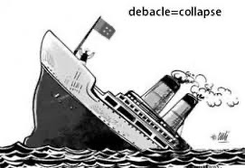

alliterate
[ə'litəreit]
illiterate: a.文盲的
literate: a.有读写能力的；有文化修养的
obliterate: v.涂掉，擦掉
抹除 文字 掉 涂掉擦掉
literate(['litərit]): a.有读写能力的；有文化修养的
iterate(['itəreit]): v. 重做，反复重申
alli(): n. 阿莱（一种减肥药）
allite(): 富铝土; 铝铁土
iter(): [医] 导管, 通路
iterate('itәreit): vt. 反复说, 重复\n[计] 迭代
lite(lait): a. 低盐的；清淡的；简化的
liter('li:tә): n. 公升\n[化] 升
literate('litәrit): n. 学者\na. 有读写能力的, 精通文学的, 受过教育的
rate(reit): n. 比率, 率, 速度, 价格, 费用, 等级\nvt. 估价, 认为, 鉴定等级, 责骂\nvi. 被评价, 责骂
tera(): [计] 太, 万亿
apocryphal
[ə'pɔkrif(ə)l]
apocrypha: n.伪经，伪书
apocrypha([ə'pɔkrifə]): n.伪经，伪书
apocrypha(ә'pɔkrifә): n. 作者（或真实性、权威性）可疑的著作；旁经
belie
[bi'lai]
bale: n.大包裹；灾祸，不幸
bile: n.胆汁
blue: a.忧伤的，沮丧的
bulge: n./v.膨胀，鼓起
byline: n.(列作者名字的)报刊文章首行
delve: v.深入探究，钻研
elite: n.精华，中坚
relic: n.遗物，遗迹
belch: n./v. 打嗝；(火山)喷出
eerie: adj. 可怕的，阴森恐怖的
feline: adj. 猫科的
helve: n. 斧柄

beli(): n. (Beli)人名；(塞)贝利；(俄)别雷
Elie(): n. 埃利（男子名）；以利亚（圣经里的犹太先知）
callous
['kæləs]
callus: n. 老茧，胼胝
callow: a.(鸟)未生羽毛的；(人)未成熟的
gallows: n. 绞刑架，绞台
parlous: adj. 靠不住的，危险的
allo('ælәu): a. 紧密相联的；[化]同分异构的
call(kɒ:l): n. 呼叫, 访问, 打电话, 号召, 召集, 要求\nvt. 呼叫, 召集, 打电话\nvi. 叫喊, 访问, 叫牌\n[计] 调用; 呼叫; DOS内部命令:在批处理文件中调用另一个批处理文件
callo(): 卡洛（人名）
daub
[dɔ:b]
barb: n.(鱼钩的)倒钩；严厉的批评
cub: n.幼兽；年轻无经验的人
daft: a.傻的
damp: v.减弱，制止振动；a.潮湿的
dart: n.飞镖；v.急驰；投射
daunt: v.使胆怯，使畏缩
dour: a.严厉的，脸色阴沉的
drab: a.枯黄色的；无聊的
hub: n.轴心；中心
jamb: n.门窗的侧柱
laud: v.称赞
maul: v.撕裂皮肉，伤害
snub: v.冷落，不理睬
taut: a.绷紧的
damn: v. 严厉地批评，谴责；adj. 该死的
dank: adj. 阴湿的，阴冷的
daze: v. 使茫然，使眩晕
gab: n. 饶舌，爱说话；v. 空谈，瞎扯；闲逛，游荡
disaffect
[`disə'fekt]
disinfect: v.杀菌，消毒
affect(ә'fekt): vt. 影响, 感动, 假装, 模仿, 爱好, 倾向于\nn. 自觉感情
fect(): 电场效应
droll
[drəul]
drill: n.钻；钻床
dolt: n.傻瓜
drawl: v./n.慢吞吞地说话（态度）
drone: v.嗡嗡地响，单调地说；n.单调的低音
droop: v.低垂；沮丧，萎靡
dross: n.浮渣；糟粕
drove: n.畜群；人群
dull: a.不鲜明的；迟钝的；v.变迟钝
grill: v.烤；拷问；n.烤架
loll: v.懒洋洋地坐或卧
poll: n.民意测验；选举投票
prowl: v.潜行于，偷偷地漫游
roil: v.煽动，搅浑
scroll: n.卷轴，纸卷；画卷
stroll: v.漫步，闲逛
toll: n.过路(桥)费；伤亡人数，损失；v.(缓慢而有规律地)敲
broil: v. 烧烤
growl: v. (动物)咆哮，吼叫
knoll: n. 小山；小圆丘

roll(rәul): n. 卷, 滚动, 名单, 案卷, 压路机\nvi. 滚, 滚动, 飘流, 起伏, 卷, 绕\nvt. 使滚动, 卷, 绕
eddy
['edi]
edify: v.陶冶，启发
espy: v.(从远处等)突然看到
giddy: a.轻浮的，不严肃的
needy: a.贫穷的
odds: n.机会，可能性
ready: a.机敏的，迅速的
tidy: a.整齐的，整洁的
muddy: adj. 多泥的；浑浊的，不纯的
reedy: adj. 长满芦苇的；(声音)高而尖的
ruddy: adj. (脸色)红润的，红色的

enormity
[i'nɔ:miti]
enmity: n.敌意，仇恨
norm([nɔ:m]): n.规范，准则
enor(): [计]= Exclusive-NOR,“同”（逻辑电路）
enorm(i'nɔ:m): a. [古语] 庞大的；极大的, 巨大的, 其大无比的
mity('maiti): a. 多螨的
norm(nɒ:m): n. 基准, 模范, 标准, 准则, 平均数\n[化] 定额
gaiety
['geiəti]
dainty: n.精美食品；a.娇美的；挑剔的
gait: n.步法，步态
guilty: a.有罪的
laity: n.俗信徒，俗人阶级；外行
naivety: n. 天真，纯朴，幼稚
glut
[glʌt]
abut: v.接界，毗连
blue: a.忧伤的，沮丧的
blunt: a.钝的；直率的；v.变钝
blur: n.模糊不清的事物；v.使…模糊
blurt: v.脱口而出
bout: n.一回合，一阵
clot: n.凝块；v.使凝结成块
clout: n. 敲打，轻叩；影响力，权势
vt. 敲击，掌击
vt. 敲击，掌击
flit: v.掠过，迅速飞过
flout: v.蔑视，违抗
flux: n.不断的变动，动荡不定
gait: n.步法，步态
gist: n.要点，要旨
glib: a.流利圆滑的，善辩的
gloat: v.幸灾乐祸地看，窃喜
glow: v./n.光亮，发热；(脸)红
grit: n.沙粒；决心，勇气；v.下定决心，咬紧牙关
gum: n.树胶，橡皮
gust: n.阵风；一阵(情绪)
guy: n.(铁塔等的)支索，牵索
lot: n.签；命运；v.抽签，划分
lug: v./n.拖，拉
lust: n.强烈的欲望
plot: n.情节；阴谋；策划
pout: v.噘嘴，板脸
slot: n.狭孔
slur: v.含糊不清地讲
taut: a.绷紧的
tout: v.招徕顾客；极力赞扬
gamut: n. 全音阶；(一领域的)全部知识
gaunt: adj. 憔悴的，瘦削的
glee: n. 欢喜，高兴
gnat: n. 对小事斤斤计较，琐事
hut: n. 简陋的房子，棚
lout: n. 粗人
rout: n. 大败，溃败
slit: v. 撕裂；n. 裂缝
slue: v. (使)旋转
hubris
['hju:bris]
debris: n.废墟，残骸
hybrid: n.杂种；混血人
hub([hʌb]): n.轴心；中心
bris(b'rɪs): n. 割礼
hunk
[hʌ6k]
hulk: n.废船，船壳；笨重之人或物
husk: n.外壳；皮，荚
chunk: n. 短厚块状物；大量
buck: v.反对；n.雄鹿；雄兔
bulk: n.体积；数量；大多数；大身躯
dune: n.沙丘
hack: v.乱劈，乱砍；n.雇佣文人
haunt: v.常去；鬼魂出没；(事情)萦绕心头；n.常去的地方
hawk: n.隼，鹰
hone: n.磨刀石；v.磨刀
hub: n.轴心；中心
hue: n.色彩，色泽
hull: n.外壳；荚；船身；v.剥去外壳
hunch: n.直觉，预感
hurl: v.猛投；大声叫骂
hush: v./n.肃静，安静
husky: a.声音沙哑的
lank: a.瘦削的；长而软的
adj. (人)瘦弱的; (树等)细长的; (草等)稀疏的; (头发)平直的
lurk: v.潜伏，埋伏
pun: n.双关语
puny: a.弱小的，发育不良的
rung: n.梯子横挡，梯级
shuck: n.(植物的)壳，夹；无用之物
shun: v.避免，闪避
shunt: v.使(火车)转到另一轨道，转移方向
trunk: n.树干；大衣箱
tusk: n.(象)长牙
wink: v.使眼色；n.眨眼
dank: adj. 阴湿的，阴冷的
flunk: v. 考试不及格

hut: n. 简陋的房子，棚
ruck: n. 皱褶；普通群众
skunk: n. 臭鼬，黄鼠狼；v. 欺骗
spunk: n. 勇气，胆量
记： hulk吃了未知的大块食物
imprudent
[im'pru:dənt]
impudent: a.鲁莽的，无礼的
prudent: a.审慎的，三思而后行的，精明的
den([den]): n.兽穴，窝
dent([dent]): n.缺口，凹痕；v.弄凹
imp([imp]): n.小鬼；顽童
prude([pru:d]): n.过分守礼的人
prudent(['pru:dənt]): a.审慎的，三思而后行的，精明的
dent(dent): n. 凹痕\nvt. 使凹下, 削弱\nvi. 塌陷
prude(pru:d): n. 拘守礼仪的人, 故作正经的人
pruden(): [人名] 普鲁登
prudent('pru:dnt): a. 审慎的, 三思而后行的, 精明的, 节俭的
rude(ru:d): a. 粗鲁无礼的, 粗陋的, 粗暴的, 原始的, 未开化的, 大略的, 崎岖不平的, 狂暴的
ruden(): [地名] [奥地利] 鲁登; [地名] [德国] 鲁登岛
uden(): [人名] 尤登; [地名] [荷兰] 于登
udent('ju:dәnt): 湿新成土
inappreciable
[`inə'pri:ʃəbl]
appreciable: a.明显的
appreciable([ə'pri:ʃiəbl]): a.明显的
able('eibl): a. 能干的, 能够的
appreciable(ә'pri:ʃiәbl): a. 可感知的, 可评估的
napp(): v. 打盹;午睡;发呆;疏忽;使起毛
preci(): [地名] [意大利] 普雷奇
languish
['læŋgwiʃ]
anguish: n.极大痛苦
languid: a.没精打采的，倦怠的
vanquish: v.征服
记： 孙红雷开着🚐来西瓜摊征服
anguish(['æŋgwiʃ]): n.极大痛苦
anguis(): n. (Anguis)人名；(西)安吉斯
anguish('æŋgwiʃ): n. 剧痛, 痛苦\nvt. 使极痛苦\nvi. 感到痛苦
leer
[liə]
jeer: v.嘲笑
leery: a.机警的，怀疑的
lever: n.杠杆；v.撬动
peer: n.同等之人，同辈
veer: v.转向，改变(话题等)
alter: v.改变，更改
aver: v.极力声明；断言；确证
deed: n.行为；(土地或建筑物的)转让契约、证书
defer: v.推延；听从
deter: v.威慑，吓住；阻止
err: v.犯错误，出错
ewer: n.大口水罐
gear: n.齿轮；装备；仪器
heed: v.注意，留心；n.关心
heir: n.继承人
lair: n.野兽的巢穴；躲藏处
leak: v.泄漏；n.泄漏；漏出量，漏洞
ledger: n.账簿
levee: n.防洪堤；隄岸
levy: v./n.征税；征兵
lien: n.扣押权；留置权
meek: a.温顺的，顺服的
meet: a.合适的
peel: v.削去…的皮；剥落；n.外皮
reed: n.芦苇；簧片
reek: v.发臭味；冒烟
reel: n.卷轴，旋转；v.卷…于轴上
sear: v.(以烈火)烧灼
seep: v.(液体等)渗漏
sever: v.切断，脱离
sewer: n.排水沟，下水道
sheer: a.完全的；陡峭的；极薄的
sneer: v.嘲笑，鄙视
steer: v.操舵，驾驶；n.公牛，食用牛
tear: v.撕裂
ulcer: n.溃疡；腐烂物
weed: n.杂草，野草；v.除草
beet: n. 甜菜

fleet: adj. 快速的；v. 消磨，疾驰；飞逝，掠过
glee: n. 欢喜，高兴
lean: v. 倾斜；斜靠；adj. 瘦骨嶙峋
peek: v. 偷看
peep: n./v. 瞥见，偷看；初现
peery: adj. 窥视的；好奇的；怀疑的
pier: n. 桥墩；码头
queer: adj. 奇怪的，疯狂的
teem: v. 充满；到处都是；v. 下倾盆大雨
mendicant
['mendikənt]
cant([kænt]): n.斜坡，斜面；隐语，术语，黑话；v.使倾斜
mend([mend]): v.修改，改进
cant(kænt): n. 伪善之言, 黑话, 斜面, 角落\nvi. 讲黑话, 倾斜
ican(): n. (Ican)人名；(塞)伊灿
mend(mend): n. 改进, 修补, 好转\nvt. 修改, 改进, 加快, 修理\nvi. 好转, 改善
mendi(): [地名] [巴布亚新几内] 门迪
molten
['məultən]
mitten: n.(四指套在一起拇指分开的)连指手套
molt: v.换羽，脱毛；n.换羽(期)，脱毛(期)
mote: n.微粒，微尘
pollen: n.花粉
rotten: a.腐败的；糟糕的
molt([məult]): v.换羽，脱毛；n.换羽(期)，脱毛(期)
molt(mәult): n. 换毛, 脱皮, 脱落物\nv. 脱毛, 换毛

nautical
['nɔ:tikəl]
nautic('nɔ:tik): n. (尤指英国皇家海军的)水兵, 水手
nautica(): [人名] 诺蒂卡
tica(): n. 泰国币铢
tical(ti'kɑ:l, -'kɔ:l): 泰国旧货币单位(现为baht铢)
utica('ju:tikә): n. 尤蒂卡（美国纽约州中部城市）
padding
['pædiŋ]
pending: a.即将发生的；未决的
piddling: a.琐碎的，微不足道的
din([din]): n.喧闹声，嘈杂声
addin(): n. 外接程序（程序名）\nn. (Addin)人名；(阿拉伯)阿丁
adding('ædiŋ): [计] 加法的
ding(diŋ): vi. 响, 连响, 反复告诫\nvt. 反复告诉\nn. 钟声
padd(): [计]= Power And Data Distribution Device,[P8]CPU处理能力和信息分配器
paddi(): [医] 糙米
plaza
['plɑ:zə]
glaze: v.装玻璃于；上釉彩；n.釉
lava: n.熔岩
plain: a.简单的；清楚的；n.平原
plait: n.发辫；v.编成辫

plane: n.铇子；平面；v.刨
piazza: n. 阳台；广场
plank: n. 厚木板；要点
plunder
['plʌndə]
blunder: v.犯大错；笨拙地做；n.愚蠢之举
asunder: a./adv.分离的；化为碎片
flounder: v.挣扎；艰苦地移动；n.比目鱼
founder: v.(船)沉没；(计划)失败
pander: v.怂恿，迎合(不良欲望)
plumber: n.管子工，铅管工
plunge: v.投入；俯冲
ponder: v.仔细考虑
slander: v./n.诽谤，诋譭
sunder: v.分裂，分离
lund(): n. 隆德（瑞典南部城市）；伦德（姓氏）
lunde(): [人名] 伦德
unde(): a. （法）波形的
under('ʌndә): prep. 在...之下, 低于\na. 下面的, 从属的\nadv. 在下面
sash
[sæʃ]
gash: n.深长的伤口，裂缝
lash: n.鞭子；v.鞭打；捆住
mash: v.捣成糊状
stash: v. 藏匿，隐藏
abash: v.使害羞，使尴尬
base: a.卑鄙的
bask: v.晒太阳，取暖
brash: a.性急的；无礼的
cast: n.演员阵容；剧团；v.扔；铸造
clash: v.冲突，撞击
fast: n.绝食，斋戒；adv.很快地，紧紧地
gush: v.涌出；滔滔不绝地说
harsh: a.严厉的；粗糙的；刺耳的
hush: v./n.肃静，安静
lush: a.繁茂的，茂盛的
路旁树木 茂盛的
marsh: n.沼泽地，湿地
mask: n.假面具；v.隐藏(感情)
mast: n.船桅wei，旗杆

mesh: v.用网捕捉；齿合
oath: n.誓言；咒骂
quash: v.镇压；取消
sage: a.智慧的；n.智者
sane: a.神志清楚的，明智的
sap: n.树液；活力；v.消弱，耗尽
sate: v.使心满意足，使厌腻
squash: v.压碎，挤压；n.南瓜
leash: n. (系狗的)绳子
rasp: v. 发出刺耳的声音
sack: n. 粗布袋；v. 掠夺
safe: n. 保险柜；冷藏室，饭橱
saga: n. 英雄故事，长篇小说
shelve
[ʃelv]
helve: n. 斧柄
delve: v.深入探究，钻研
salve: n.药膏；v.减轻，缓和
shale: n.页岩(一种由似泥土细粒的沉淀物层组成的易分裂的岩石)

shell: n.贝壳；炮弹；v.剥去…的壳
shelter: n.掩蔽处，掩蔽；v.庇护，保护
shove: v.推挤，猛推
svelte: a.(女人)体态苗条的
swerve: v.突然改变方向
heave: v. 用力举
helve([helv]): n. 斧柄
helve(helv): n. 柄\nvt. 装柄于
shel(): n. 替代高能激光；中国插画家杨萄笔名
shoal
[ʃəul]
heal: v.治愈
hoax: n./v.骗局，欺骗
school: n.鱼群
scowl: n.怒容；v.生气地皱眉，怒视
shale: n.页岩(一种由似泥土细粒的沉淀物层组成的易分裂的岩石)
sham: n.虚假；v.伪装
shear: v.剪(羊毛)，剪发
shell: n.贝壳；炮弹；v.剥去…的壳
shoot: n.嫩芽，新芽
shove: v.推挤，猛推
soak: v.浸泡，渗透
soar: v.高飞，翺翔；猛增
soil: n./v.弄脏，污损
spoil: v.损坏，破坏；溺爱
phial: n. 小瓶(药水瓶)
shawl: n. (妇女用)披肩
sheaf: n. 一捆，一束
showy: adj. 鲜艳的；炫耀的
spool: n. (缠录音带等的)卷盘(轴)
solidarity
[`sɔli'dæriti]
arity(): [计]数量
dari('dɑ:ri:): n. 达里语（现代波斯语的一种）
darity(): [人名] 达里蒂
lida(): n. 利达（公司名）；丽达（女子名）
lidar('laidɑ:): n. 激光雷达
olid('ɒlid): a. 恶臭的
soli('sәuli:): 独奏曲, 独唱, 独奏, 独唱曲, 单独表演, 单飞, 单人纸牌戏
solid('sɒlid): n. 固体\na. 坚硬的, 稳固的, 固体的, 实心的, 纯质的, 立体的, 立方的\n[计] 原色
somber
['sɔmbə]
sober: a.清醒的；庄重的
limber: a.易弯曲的；敏捷的
lumber: v.蹒跚而行，笨拙地走；n.杂物；木材
simper: v.痴笑，傻笑
slumber: v.睡眠，安睡；n.安睡
solder: v.銲接，銲合
timber: n.木材；(人)品质
cumber: v. 拖累，妨碍
slobber: n. 口水；v. 流口水；粗俗地表示
omber('ɔmbә(r)): n. 三人玩的奥伯尔牌戏
sovereignty
['sɔvrinti]
sovereign: n.最高统治者，元首
reign([rein]): n.统治时期；王朝；领域
sovereign(['sɔvrin]): n.最高统治者，元首
over('әuvә): adv. 结束, 越过, 从头到尾\nprep. 在...之上, 遍于...之上, 越过\na. 上面的\nvt. 越过
reign(rein): v. 为王，为君；当政；统治\nn. 为王，为君；当政；统治
sover(): n. 索维风
sovereign('sɒvrin): n. 元首, 独立国\na. 具有主权的, 至高无上的, 国王的, 完全的
Vere(): 维尔（人名）
specious
['spi:ʃəs]
spacious: adj. 广阔的，宽敞的
spurious: a.假的；伪造的
IOUs(): suff. 有…性质的；属于…的；如…的
spec(spek): n. 投机, 投机事业, 规格, 说明书, 专业人员\n[化] 加工单
tempest
['tempist]
temper: v.锤炼；缓和；n.脾气
pest([pest]): n.害虫；讨厌的人或物
temp([temp]): v.做临时工作
pest(pest): n. 令人讨厌之物, 有害之物, 害虫, 瘟疫\n[医] 鼠疫, 瘟疫
temp(temp): n. [口]临时雇员
Tempe('tempi): 潭蓓谷(古希腊提萨里 Thessaly 地方的溪谷)
acrid
['ækrid]
arid: a.干旱的；枯燥的
aria: n.独唱曲，咏叹调
avid: a.渴望的
avoid: v.避开，躲避
lurid: a.耀眼的；骇人听闻的
sacred: a.神圣的，庄严的
allegory
['æligəri, 'æligɔ:ri]
alle(): n. 政府彩票组织国际协会；阿莱（电影名称）
alleg(): n. (Alleg)人名；(阿拉伯、法)阿莱格\n被指称的
gory('gɒ:ri): a. 血淋淋的, 满是血的, 血污的
lego(): n. 乐高积木（商标名）
amoral
[ei'mɔrəl]
atonal: a.(音乐)无调的
morale: n.士气，精神力量
mural: a.墙壁的；n.壁画
avowal: n. 声明
amor('eimɔ): [医] 恋爱, 爱情
amora(ɑ:'məurɑ:): n. 阿莫拉（犹太教律法学者，犹太教口传律法集《塔木德》的编集者）
mora('mɔ:rә): [法] 迟延, 非法延误, 疏忽
moral('mɒrәl): n. 道德, 品行, 寓意\na. 道德的, 品性端正的, 精神上的
oral('ɒ:rәl): n. 口试\na. 口头的, 口述的, 口部的
apparatus
[`æpə'reitəs]
asparagus: [植]芦笋，龙须菜(可作蔬菜)
appar(): n. 仪表（机构、学术著作中的注解）
apparat(,æpә'rɑ:t): n. 政治组织, 地下活动组织
aratus(): n. (Aratus)人名；(希)亚拉图；(法)阿拉蒂
para('pɑ:rә): [经] 帕拉
app是我们的设备和仪器
apparel
[ə'pærəl]
appall: v.使惊骇，使恐怖
pare([pɛə]): v.削；修剪；削减，缩减
appar(): n. 仪表（机构、学术著作中的注解）
arel(): n. (Arel)人名；(法、土)阿雷尔
pare(pєә): vt. 剥, 削, 消减
parel(): n. 帕雷尔（孟买中部一地区名）
aquiline
['ækwilain]
aqui(): n. (Aqui)人名；(意)阿奎
line(lain): n. 列, 线, 绳, 电线, 线路, 路线, 航线, 作业线, 界线, 战线, 外形, 排, 家系\nvt. 排成一行, 顺...排列, 划线于, 加衬里, 使有线条, 使起皱纹\nvi. 排队\n[计] 线路
quil(): n. 奎尔（男子名）
arrogate
['ærəugeit]
abrogate: v.废止，废除
arrogance: n.傲慢，自大
arrogant: a.傲慢的，自大的
derogate: v.贬低，诽谤
irrigate: v.灌溉
surrogate: n.代替品；代理人
gate(geit): n. 门, 牌楼, 大门, 通道, 闸\nvt. 装门于\n[计] 门; 栅
artistry
['ɑ:tistri]
artis(): n. 阿提斯动物园（位于荷兰）
artist('ɑ:tist): n. 艺术家, 画家
stry(): n. 士的宁（拮抗剂）
banter
['bæntə]
barter: v.易货贸易
alter: v.改变，更改
badger: n.獾；v.一再烦扰，一再要求
bane: n.祸根
banister: n.(楼梯的)栏杆
baste: v.倒油脂于(烤肉上，以防烤干)
cater: v.迎合；提供饮食及服务
falter: v.摇晃，蹒跚；支吾地说
inter: v.埋葬
palter: v.含糊其词
pander: v.怂恿，迎合(不良欲望)
panther: n.黑豹
rafter: n.椽子

ranger: n.森林管理员；巡逻骑警
saunter: n./v.闲逛，漫步
bather: n. 入浴者，浴疗者
canker: n. 溃疡病；祸害
gander: n. 雄鹅；笨人；v. 闲逛
ban([bɑ:n]): n.禁令
ante('ænti): n. 赌注\nv. 下赌注
anter(): 前片
bant(bænt): vi. 做减肥治疗法\n[医] 忌食减瘦
blatant
['bleitənt]
latent: a.潜伏的
tan([tæn]): v.鞣(革)
atan(): n. (Atan)人名；(土)阿坦
blat(blæt): v. 咩咩叫, 嚷嚷着说
bleachers
['bli:tʃəz]
bleach([bli:tʃ]): v.漂白
ache(eik): n. 疼痛\nvi. 痛, 哀怜, 渴望
acher(): n. 阿切尔（男子名）
bleach(bli:tʃ): vt. 漂白\nvi. 变白\nn. 漂白, 漂白剂
bleacher('bli:tʃә): n. 漂白业者, 漂白剂, 露天看台\n[化] 漂白机; 纸浆漂白机
cher(): n. 谢尔河（法国）
chers(): (cher 的复数) n. 谢尔河（法国）
each(i:tʃ): a. 每个, 每一\nadv. 每个\npron. 每个, 个人, 各自
hers(hә:z): pron. 她的
leach(li:tʃ): vt. 过滤, 萃取\nvi. 滤掉\nn. 过滤, 过滤器, 沥出物
leacher('li:tʃә): 浸出器
bonnet
['bɔnit]
sonnet: n.十四行诗
onset: n.(坏情况)开始发作
cornet: n. 短号；圆锥形蛋卷
Bonn(bɒn): n. 波恩
bonne(bɔn): n. [法]女佣, 女仆
brawl
[brɔ:l]
drawl: v./n.慢吞吞地说话（态度）
bawl: v. 大叫，大喊
trawl: n. 拖网；v. 用拖网捕鱼；搜罗
awl: n.(钻皮革的)尖钻
bail: n.保释金
brace: v.使稳固，架稳；n.支撑物
brag: v.吹嘘
braid: n.穗子；发辫；v.编成辫子
brake: n.刹车；v.减速，阻止
brand: n.商标；烙印；v.在某事物上打烙印
brash: a.性急的；无礼的
brat: n.孩子；顽童
frail: a.脆弱的；不坚实的
prowl: v.潜行于，偷偷地漫游
rail: n.栏杆；铁轨；v.咒骂，猛烈指责
scrawl: v.潦草地写，乱涂
brawny: adj. (人)强壮的
bray: v. 大声而刺耳地发出（叫唤或声音）
broil: v. 烧烤
growl: v. (动物)咆哮，吼叫
shawl: n. (妇女用)披肩
sprawl: v. 伸展手脚而卧
awl([ɔ:l]): n.(钻皮革的)尖钻
braw(brɒ:): a. 衣饰华美的, 华饰的, 美好的
brooch
[bru:tʃ]
broach: v.开瓶；提出(讨论)
blotch: n.(皮肤上的)红斑点；(墨水等)大斑点
breach: n.裂缝，缺口；v.打破，裂开；违背
brood: n.一窝幼鸟；v.孵蛋；冥想
brook: n.小河
crouch: v.蹲伏，弯腰
grouch: n.牢骚，不满
botch: v. 笨手笨脚地)弄坏某事
broo(bru:): [苏][北英]任何可饮用的清饮料(清汤, 果汁等)
burgeon
['bə:dʒ(ə)n]
surgeon: n.外科医师；军医，船上的医生
bludgeon: n. 大头棒；v. 用棒打击
burg(bә:^): n. 城, 镇
Burge(): n. (Burge)人名；(法)比尔热；(英)伯奇
burgeo(): [地名] [加拿大] 伯吉奥
geon('dʒi:әn): 吉纶(聚氯乙烯树脂)
urge(ә:dʒ): n. 冲动, 推动力, 迫切的要求\nvt. 驱策, 力劝, 竭力主张, 推动\nvi. 强烈要求
burrow
['bʌrəu]
furrow: n.犁沟；皱纹

harrow: n.耙；v.使痛苦
farrow: v. (母猪)生产；n. 一窝小猪
marrow: n. 骨髓；精华
burr(bә:): n. 毛边, 钻孔器, 芒刺\nv. 发音含混地说话
burro('burәu): n. 小驴
caldron
['kɔ:drən]
calumniate
[kə'lʌmnieit]
alum('ælәm): n. 明矾, 矾, 校友\n[化] 明矾; 钾铝明矾
alumni(ә'lʌmni): pl. 男毕业生, 男校友
iate(): 伊利诺伊州英语教师协会(Illinois Association of Teachers of English)\n国际戒酒教育协会(International Association for Temperance Education)
canard
[kæ'nɑ:d]
canary: n.金丝雀；女歌星
candid: a.率直的
coward: n.胆小鬼
hazard: n.危险
anar(): n. (Anar)人名；(土、阿塞、土库)阿纳尔
cana('keinә): n. 迦南（巴勒斯坦北部的一个村庄）
nard(nɑ:d): n. 甘松, 甘松油膏\n[医] 甘松香, 甘松
canker
['kæ6kə]
banter: n.打趣，玩笑
candor: n.坦白，率直
cane: n.枴杖
cater: v.迎合；提供饮食及服务
cinder: n.余烬，矿渣
confer: v.讨论，商谈；赠予
pander: v.怂恿，迎合(不良欲望)
ranger: n.森林管理员；巡逻骑警
tinker: n.补锅工人；v.拙劣修补
caper: v./n. 雀跃，欢蹦
gander: n. 雄鹅；笨人；v. 闲逛
hawker: n. 沿街叫卖之小贩
anke(): n. (Anke)人名；(日)安毛(姓)；(德、俄)安克
anker('æŋkә): n. 安加(量酒的单位名称)
carapace
['kærəpeis]
apace(ә'peis): adv. 快速地, 急速地
arap(): n. (Arap)人名；(葡、塞、肯)阿拉普
cara(): n. 卡拉（女性人名）
pace(peis): n. 速度, 步调, 步法\nvi. 踱步, 缓慢走\nvt. 用步测, 踱步于
Rapa(): n. (Rapa)人名；(意、塞)拉帕

celebrated
['selibreitid]
brat([bræt]): n.孩子；顽童
ated(et; eit): v. 吃（eat的过去式）
brat(bræt): n. 乳臭未干的小孩, 小孩\n[机] 不煤, 原煤
cele(): suff. 疝；肿物
celeb(si'leb): n. 著明人士
celebrate('selibreit): v. 庆祝, 祝贺, 举行
rate(reit): n. 比率, 率, 速度, 价格, 费用, 等级\nvt. 估价, 认为, 鉴定等级, 责骂\nvi. 被评价, 责骂
rated('reitid): [电] 额定的
celerity
[si'leriti]
celebrity: n.名声；知名人士
clarity: n.清楚
temerity: n.鲁莽，大胆
cele(): suff. 疝；肿物
celer(): comb. 表示“快, 速”
chalice
['tʃælis]
choice: a.上等的；精选的
malice: n. 恶意, 怨恨
halic('hælik): 盐土植物
lice(lais): n. 虱, 寄生虫, 小虫, (非正式)低贱的人, 不受欢迎的人, 卑鄙的人\n[医] 虱
chide
[tʃaid]
hide: n.兽皮
abide: v.容忍，忍受
cede: v.割让(土地权利)，放弃
chafe: v.摩擦生热；擦痛；激怒
chase: v.雕镂；追捕
chip: n.薄片，碎片；集成电路片
chisel: n.凿子；v.凿；欺骗
choice: a.上等的；精选的
choke: v.(使)窒息，阻塞
cite: v.引用，引述
code: n.密码；法典；v.将某事物编写成密码
glide: v.滑行，滑动
hie: v.疾走，催促
hike: v.高涨，上昇；n.徒步旅行
hive: n.蜂房；忙碌之地
snide: a.讽刺的，含沙射影的
whine: v.哀号，号哭
chic: adj. 漂亮的，时髦的
chirp: v. (鸟或虫)唧唧叫
chore: n. 家务琐事；讨厌的工作
hide([haid]): n.兽皮
chid(): chide的过去式和过去分词
hide(haid): n. 兽皮, 迹象, 躲藏处\nvt. 藏, 隐瞒, 遮避, 剥...的皮, 隐藏\nvi. 躲藏\n[计] 隐藏
clout
[klaut]
clot: n.凝块；v.使凝结成块
flout: v.蔑视，违抗
lout: n. 粗人
aloft: adv.在空中，在头顶上
bout: n.一回合，一阵
cleft: n.裂缝；a.劈开的
clog: n.障碍; v.阻塞
closet: n.壁橱；a.秘密的
clown: n.小丑；v.扮小丑
coup: n.意外而成功的行动
court: n.法庭，法院；宫廷，朝廷；v.献慇懃；追求
gloat: v.幸灾乐祸地看，窃喜
glut: v./n.过多；供过于求
lot: n.签；命运；v.抽签，划分
plot: n.情节；阴谋；策划
pout: v.噘嘴，板脸
slot: n.狭孔
stout: a.肥胖的；强壮的
tout: v.招徕顾客；极力赞扬
cloy: v. (吃甜食)生腻，吃腻
colt: n. 小雄驹
loft: n. 阁楼，顶楼

rout: n. 大败，溃败
spout: v. 喷出；滔滔不绝地讲
lout([laut]): n. 粗人
clou(klu:): n. 中心思想, 最引人处
lout(laut): n. 蠢人\nvt. 愚弄\nvi. 屈服
vt. 敲击，掌击
commiserate
[kə'mizəreit]
miser(['maizə]): n.守财奴，吝啬鬼
commis(kɔ:'mi:): n. <法>小职员, 副手
iser(): [医][=International Society for Eye Research]国际眼研究学会
mise(mi:z): n. 协定\n[法] 争论点, 协定, 协约
miser('maizә): n. 守财奴, 吝啬鬼, (石油工程上用的)锥钻头
rate(reit): n. 比率, 率, 速度, 价格, 费用, 等级\nvt. 估价, 认为, 鉴定等级, 责骂\nvi. 被评价, 责骂
sera('siәrә): 浆液, 血清\n[医] 血清; 浆液
commodious
[kə'məudiəs]
odious(['əudjəs]): a.可憎的，讨厌的
IOUs(): suff. 有…性质的；属于…的；如…的
odious('әudiәs): a. 可憎的, 可厌的, 丑恶的
condone
[kən'dəun]
condole: v. 向…吊慰
condense: v.浓缩
confine: v.限制，禁闭
console: v.安慰，抚慰
convoke: v.召集
condor: n. 秃鹰；神鹰
convene: v. 集合；召集
cond(): n. 气孔导度；电导率；条件数
condo(kәn'dәu): n. 共同统治, 共管下的政府, 共管, 多层公寓大楼, 由个人占用的一套公寓房间
condon('kɔ ndәn): n. 康登（姓氏）
done(dʌn): a. 完成了的, 好了的\ndo的过去分词
ondo(): [地名] [尼日利亚] 翁多
conducive
[kən'dju:siv]
cond(): n. 气孔导度；电导率；条件数
confer
[kən'fə:]
conifer: n.针叶树
coffer: n. 保险柜
cinder: n.余烬，矿渣
concur: v.意见相同，一致
cone: n.松果；圆锥体
confess: v.承认，供认
confirm: v.证实，证明
conform: (to)v.符合或遵守公认的规则
conquer: v.以武力征服
convert: v.使改变(信仰等)；n.改变信仰的人
convex: a.凸出的
convey: v.运载，运送；表达
cower: v.畏缩，蜷缩
infer: v.推断，推定
ponder: v.仔细考虑
canker: n. 溃疡病；祸害
condor: n. 秃鹰；神鹰
nfer(): (nf 的比较级) [电] 千亿分之一法
conflate
[kən'fleit]
collate: v.对照，核对
column late 晚点对列 核对数据
conclave: n.秘密会议
inflate: v.使充气，使膨胀
flat(flæt): a. 平坦的, 单调的, 无力的, 浅的, 萧条的, 干脆的, 无聊的\nadv. 平直地, 断然地\nn. 扁平物, 平面, 平地, 平原, 平板车\nv. (使)变平
late(leit): a. 迟的, 晚的, 已故的\nadv. 很晚, 很迟, 晚
conjecture
[kən'dʒektʃə]
conj(): (缩)连接词
ject(): n. 国民住宅（等于project,常出现于黑人的口语和说唱乐中）
ture(): 油温测量装置；介观结构
consecrate
['kɔnsikreit]
crate([kreit]): n.篓，板条箱
crat(): n. 板条箱
crate(kreit): n. 板条箱, 装货箱\n[建] 篓, 筐
nsec(): [计] 纳秒, 毫微秒
rate(reit): n. 比率, 率, 速度, 价格, 费用, 等级\nvt. 估价, 认为, 鉴定等级, 责骂\nvi. 被评价, 责骂
consonance
['kɔnsənəns]
consonant: a.调和的，一致的
ance(eins): n. 状态；性质；情况
nanc(): [医][=non-adrenergic,non-cholinergic]非肾上腺素能，非胆碱能
nance('nɑ:nsei): n. 女人气的男人, 搞同性关系的人
onan(): 油浸自冷（变压器冷却方式，Oil Natural Air Natural）
sonance('sәjnәns): n. 有声状态, 声音
conspectus
[kən'spektəs]
pectus(): [医] 胸
spec(spek): n. 投机, 投机事业, 规格, 说明书, 专业人员\n[化] 加工单
consternation
[`kɔnstə(:)'neiʃən]
constellation: n.星座，星群
stern([stə:n]): n.船尾
ation(eɪʃən): 增强辐射, 文明阶段
const(): n. 常量, 常数
erna('ə:nə): n. 厄纳（女子名）
nation('neiʃәn): n. 国家, 民族\n[法] 民族, 国家
ster(): n. 灭菌, 绝育；消毒器, 杀菌器
stern(stә:n): n. 尾部, 船尾, 臀\na. 严厉的, 严格的, 坚定的, 坚决的
sterna(): 胸, 胸骨
tern(tә:n): n. 三个一组, 燕鸥
tion(): n. 象征式互动；支票电托收
consul
['kɔnsəl]
census: n.人口统计
concur: v.意见相同，一致
console: v.安慰，抚慰
countenance
['kauntinəns]
ance(eins): n. 状态；性质；情况
count(kaunt): vt. 计算, 视为\nvi. 计数\nn. 计算, 合计, 计数, 伯爵\n[计] 计数
enance(): n. 忏悔
nanc(): [医][=non-adrenergic,non-cholinergic]非肾上腺素能，非胆碱能
nance('nɑ:nsei): n. 女人气的男人, 搞同性关系的人
tena(): [地名] [厄瓜多尔、哥伦比亚] 特纳
counterpoise
['kauntəpɔiz]
poise([pɔiz]): v.使相等，使平衡；n.泰然自若，镇定
count(kaunt): vt. 计算, 视为\nvi. 计数\nn. 计算, 合计, 计数, 伯爵\n[计] 计数
counter('kauntә): n. 计算器, 计算者, 柜台, 筹码\na. 反方向的, 相反的\nadv. 反方向地, 相反地\n[计] 计数器; 计数字
Oise(): n. (Oise)人名；(日)生濑(姓)\n瓦兹河
poise(pɒiz): n. 平衡, 均衡, 姿势, 镇静, 安静, 砝码\nvt. 使平衡, 使悬着, 保持...姿势\nvi. 平衡, 悬着, 准备好
covet
['kʌvit]
covert: a.秘密的，隐密的
coven: n. (尤指十三个)女巫的集会
cadet: n.军校或警官学校的学生
caveat: n.警告，告诫

closet: n.壁橱；a.秘密的
code: n.密码；法典；v.将某事物编写成密码
cogent: a.有说服力的
cone: n.松果；圆锥体
convert: v.使改变(信仰等)；n.改变信仰的人
convex: a.凸出的
convey: v.运载，运送；表达
core: n.果心；核心)；v.去掉某物的中心部份
cosset: v.宠爱，溺爱
court: n.法庭，法院；宫廷，朝廷；v.献慇懃；追求
cower: v.畏缩，蜷缩
cozen: v.欺骗, 哄骗
hovel: n.茅舍；肮脏的小屋
hover: v.翺翔；(人)徘徊
overt: a.公开的，非秘密的
rivet: n.铆钉；v.吸引(注意力)
colt: n. 小雄驹
cornet: n. 短号；圆锥形蛋卷
rove: v. 流浪，漂泊
cove(kәuv): n. 山凹, 小湾\nv. (使)内凹, (使)成拱形
crockery
['krɔkəri]
trickery: n. 欺骗，诡计
croc(krɔk): n. <口>=crocodile
crock(krɒk): n. 壶, 罐, 碎瓦片\nvt. 使受伤, 弄衰弱\nvi. 摩擦脱色, 衰竭
Crocker(): n. (Crocker)人名；(英、葡)克罗克
kery(): [人名] 克里，克丽（女名）
Ocker('ɔkә(r)): <澳俚> n.无教养的澳大利亚人,粗鲁的澳大利亚人
rock(rɒk): n. 岩石, 岩礁, 石头, 基石, 暗礁, 摇动, 摇滚乐\nvt. 摇摆, 摇动, 使摇晃, 使动摇\nvi. 摇, 摇动
rocke(): n. (Rocke)人名；(英、德)罗克
rocker('rɒkә): n. 摇的人, 摇杆\n[电] 摇杆
rockery('rɒkәri): n. 假山
crook
[kruk]
brook: n.小河
croak: n.蛙鸣声；v.发牢骚，抱怨
croon: v. 低声歌唱
brood: n.一窝幼鸟；v.孵蛋；冥想
coop: n.(鸡)笼，栏
Coup 政变
crack: n.爆裂声；裂缝；v.裂开；破解，破译
creek: n.小湾，小溪
cross: a.生气的
crown: v.加冕，使成王，居…之顶
droop: v.低垂；沮丧，萎靡
groom: n.马夫；新郎
rook(rʌk): n. (象棋)车, 骗子\nvt. 骗
cupidity
[kju(:)'piditi]
humidity: n.湿度，湿气
Cupid('kju:pid): n. 丘比特, 丘比特画像, 美男孩
dalliance
['dæliəns]
alli(): n. 阿莱（一种减肥药）
allia(): n. (Allia)人名；(意)阿利亚
alliance(ә'laiәns): n. 联盟, 联合\n[法] 同盟, 联盟, 联姻
ance(eins): n. 状态；性质；情况
dall(dɔ:l): n. [动]野大白羊（产于北美西北部山区）；达尔（男子名）
dalli(): [地名] [尼日利亚] 达利
lian(): n. 莲中华料理（店名）
dastard
['dæstəd]
discard: v.扔掉，抛弃
astar(): n. (Astar)人名；(法)阿斯塔尔
star(stɑ:): n. 星, 恒星, 星形物, 运气, 明星\nvt. 以星状物装饰, 用星号标, 使成为明星\nvi. 变成明星
tard(): n. (Tard)人名；(法)塔尔
debacle
[dei'bɑ:kl]
debase: v.贬低，贬损
debate: n.正式的辩论，讨论
deface: v.损坏
acle('ækli): 阿克来
deba(): [医] 迪巴, 二乙基巴比土酸

debouch
[di'bautʃ]
retouch: v.修描；润色
bouch(): [人名] [英格兰人姓氏] 鲍奇 Budge的变体
debo(): [人名] 迪博
ouch(autʃ): interj. 哎唷(表剧痛)\nn. 扣环, 胸针, 珠宝饰物
decant
[di'kænt]
decent: a.适当的，可接受的；得体的
recant: v.改变，放弃(以前的信仰)
cant: n.斜坡，斜面；隐语，术语，黑话；v.使倾斜
deceit: n.欺骗，欺诈
demand: v.要求，苛求
dent: n.缺口，凹痕；v.弄凹
descent: n.降落；侵袭；血统
deviant: a.越出常规的
pecan: n.山核桃
pedant: n.迂腐之人，书呆子
recast: v.重铸；更换演员
scant: a.不足的，缺乏的
tenant: n.房客
decamp: v. (士兵)离营；匆忙秘密地离开
cant([kænt]): n.斜坡，斜面；隐语，术语，黑话；v.使倾斜
cant(kænt): n. 伪善之言, 黑话, 斜面, 角落\nvi. 讲黑话, 倾斜
deca(): n. 十（词头）
decan('dekәn): 黄道十度分度
default
[di'fɔ:lt]
fault: n.错误；(地质学)断层
fault([fɔ:lt]): n.错误；(地质学)断层
ault(): n. 阿尔特（姓氏）
faul(): [人名] [英格兰人姓氏] 福尔 Fall的变体
fault(fɒ:lt): n. 过错, 故障, 毛病\nvt. 挑剔\nvi. 产生断层, 弄错\n[计] 故障
deference
['defərəns]
defer([di'fə:]): v.推延；听从
defer(di'fә:): vi. 推迟, 延期, 听从\nvt. 使推迟, 使延期
ence(): 具...的行为,状态
fere(fɪə): n. 伴侣, 配偶
ferenc(): n. (Ferenc)人名；(德、匈、罗、塞、波、捷)费伦茨
ference(): [人名] 费尔伦斯
rence(rens): 盲目降落区的障碍物间隔
defraud
[di'frɔ:d]
fraud: n.欺诈，欺骗；骗子
defray: v. 付款
fraud([frɔ:d]): n.欺诈，欺骗；骗子
frau(frau): n. （德）夫人；已婚的女人
fraud(frɒ:d): n. 欺骗, 欺诈, 诡计, 骗子\n[经] 欺诈, 舞弊, 骗子
deign
[dein]
feign: v.假装，伪装
reign: n.统治时期；王朝；领域
align: v.将某物排列在一条直线上；与某人结盟
benign: a.慈祥的
deify: v.奉为神；崇拜
den: n.兽穴，窝
din: n.喧闹声，嘈杂声
rein: n.缰绳；v.控制
denouement
[dei'nu:mɔŋ]
den([den]): n.兽穴，窝
deno(): [电力]燃烧脱氮
derelict
['derilikt]
relic(['relik]): n.遗物，遗迹
dere(): n. 溪谷
relic('relik): n. 遗物, 遗迹, 纪念物, 遗风, 残留物
relict('relikt): n. 未亡人, 寡妇, 残余物, 残余\n[法] 寡妇, 生存者, 残存者
deride
[di'raid]
decode: v.译解(密码)
defile: v.弄污，弄脏；n.(山间)小道
delude: v.欺骗，哄骗
demise: n.死亡；财产转让
denude: v.脱去；剥蚀；剥夺
devise: v.发明，设计；图谋；遗赠给
reside: v.居住
stride: v.大步行走
eerie: adj. 可怕的，阴森恐怖的
deri(): [人名] 德里
ride(raid): n. 骑马, 乘坐, 乘车, 搭便车\nvt. 骑, 乘坐, 压迫, 控制\nvi. 骑马, 乘车, 漂游
desideratum
[di`zidə'reitəm]
dera(): [地名] [埃塞俄比亚、刚果民主共和国、印度] 德拉
desi('dezi:): n. （美）指定击球员（等于designated hitter）
side(said): n. 旁边, 侧, 方面, 胁, 侧边, 血统\na. 旁的, 侧的, 次要的\nvt. 同意, 支持\nvi. 支持, 赞助
sider('saidә): n. 支持者, 帮派成员
dictum
['diktəm]
dilettante
[`dili'tænti]
tan([tæn]): v.鞣(革)
ante('ænti): n. 赌注\nv. 下赌注
dile(): [医][=drug-induced lupus erythematosus]药物诱发红斑狼疮
Lett(let): n. 列托人, 列托语
letta(): [地名] [喀麦隆] 莱塔
Tante(): n. (Tante)人名；(西)坦特
din
[din]
bin: n.大箱子
den: n.兽穴，窝
die: n.金属模子，印模
dim: v.使暗淡，使模糊
kin: n.亲属
ail: v.生病
ban: n.禁令
bid: v.命令；出价，投标
bit: n.钻头
deign: v.屈尊，惠允(做某事)
dent: n.缺口，凹痕；v.弄凹
dingy: a.肮脏的；褪色的
dire: a.可怕的
diva: n.歌剧中的首席女主角
down: n.绒毛；汗毛
drain: v.排出沟外；喝光
dune: n.沙丘
fig: n.无花果；一点儿
grin: v.露齿而笑
hie: v.疾走，催促
ken: n.视野范围；知识范围
lien: n.扣押权；留置权
limn: v.描写；画
lint: n.绷带用麻布，皮棉

mint: n.大量；巨额
nib: n.钢笔尖
nil: n.无，零
nip: v.小口啜饮
pan: v.严厉批评
pen: n.围栏；监禁；母天鹅
pine: n.松树；v.(因疾病等)憔悴；渴望
pun: n.双关语
rein: n.缰绳；v.控制
rib: n.肋骨；伞骨
rig: v.欺骗，舞弊，伪造
rind: n.(西瓜等)外皮
sip: v.啜饮
spin: v.旋转；纺，纺纱；n.旋转
tan: v.鞣(革)
tint: n.色泽；v.给…淡淡地着色
vain: a.自负的；徒劳的
vie: v.竞争
wan: a.虚弱的；病态的
wink: v.使眼色；n.眨眼
wit: n.智力，机智
damn: v. 严厉地批评，谴责；adj. 该死的
dank: adj. 阴湿的，阴冷的
mien: n. 风采，态度
rip: v. 撕裂，撕破
vim: n. 精力，活力
wig: n. 假发
discography
[dis'kɔgrəfi]
disc(disk): n. 圆盘, 唱片\nvt. 灌唱片
disco('diskәu): n. 夜总会, 迪斯科, 的士高
graph(græf): n. 曲线图, 图表, 图形\n[计] 图形
graphy('ɡræfi): n. [语]（表示音素、词素等的）书写单位；书写符号
isco(): n. (Isco)人名；(法)伊斯科
raph(): n. (Raph)人名；(英)拉夫
discomfiture
[dis'kʌmfitʃə]
discomfit([dis'kʌmfit]): v.使懊恼；使难堪
comfit('kʌmfit): n. 糖果, 蜜饯
disc(disk): n. 圆盘, 唱片\nvt. 灌唱片
disco('diskәu): n. 夜总会, 迪斯科, 的士高
discomfit(dis'kʌmfit): vt. 打乱, 挫败, 使破灭
isco(): n. (Isco)人名；(法)伊斯科
ture(): 油温测量装置；介观结构
discourse
[dis'kɔ:s]
disburse: v.支付，支出
scour(['skauə]): v. 擦洗，擦亮；四处搜索
course(kɒ:s): n. 课程, 路线, 过程, 一道菜, 道路\nv. 追, (使)跑
disc(disk): n. 圆盘, 唱片\nvt. 灌唱片
disco('diskәu): n. 夜总会, 迪斯科, 的士高
isco(): n. (Isco)人名；(法)伊斯科
ours('auәz): pron. 我们的
scour('skauә): vt. 擦亮, 洗涤, 清洗, 冲刷成, 急速穿过\nvi. 擦, 洗, 冲刷, 腹泻, 急速穿行\nn. 擦, 洗, 腹泻, 洗涤剂
scours(): [医] 家畜腹泻病
discretionary
[dis'kreʃənəri]
discretion([dis'kreʃən]): n.谨慎，审慎
cret(): [医][=Committee on Residency Education and Training]住院医师教育与训练委员会
disc(disk): n. 圆盘, 唱片\nvt. 灌唱片
discretion(dis'kreʃәn): n. 慎重, 辨别力, 考虑, 处理权\n[法] 有决定权的
Iona(): n. 爱奥那岛（苏格兰一小岛）
nary('nεәri): a. 连…也没有的
tion(): n. 象征式互动；支票电托收
disengage
['disin'geidʒ]
dise(): [计]=DIgital Systems Education Committee,数字系统教育委员会（计算机协会）
engage(in'geidʒ): vi. 答应, 从事, 交战\nvt. 使忙碌, 雇佣, 预定, 使从事于, 使参加
gage(geidʒ): n. 抵押品, 挑战\nvt. 以...为担保, 以...为赌注\nn. 抵押品, 标准度量, 计量器\nvt. 精确计量, 估计
isen(): [人名] 伊森; [地名] [日本] 伊仙; [地名] [德国] 伊森; [地名] [德国] 伊森河
Seng(): n. (Seng)人名；(朝)生；(柬、缅、老)森
senga(): [女子名] 森嘉 Agnes的逆序拼写; [地名] [刚果民主共和国、马拉维] 森加
dismay
[dis'mei]
dismal: a.使人悲伤的，阴沉的
disbar: v.取消律师资格
distal: adj. 远离中心的，(神经)末梢的
ismay(): [人名] 伊斯梅; [地名] [美国] 伊斯梅
disquisition
[`diskwi'ziʃən]
quis(kwis): 奎斯(欧洲的一种丘鹬)
sitio(): [地名] [奥地利、古巴] 锡蒂奥
tion(): n. 象征式互动；支票电托收
distention
[dis'tenʃən]
distension: n.膨胀
abstention: n.节制
distinction: n.区别，差别；知名
dissection: n. 解剖，剖析
distent(dis'tent): a. 膨胀的, 扩张的
sten(sten): n. 斯特恩式轻机关枪
stent(): [医] 斯滕特氏印模膏; 斯滕特氏印模; 移植片固定模
tent(tent): n. 帐篷, 帷幕, 住处, 塞条, 塞子\nvi. 住帐蓬, 宿营, 暂时居住\nvt. 用帐篷遮盖, 使住帐篷, 用塞条嵌入
tion(): n. 象征式互动；支票电托收
distraught
[dis'trɔ:t]
aught(ɒ:t): n. 任何事物, 零
stra(st'rə): [医]（复strae）横纹，纹，条纹，线条，陷线（昆虫），壳纹，壳线间隙
doggerel
['dɔgərəl]
dogg(): n. 大支（台湾说唱歌手）
dogger('dɒgә): n. 小型双桅渔船\n[化] 操作工助手
Gere(): 盖尔（人名）
douse
[daus]
dose: n.剂量，一剂
souse: v. 浸在水中，使湿透
abuse: v./n.辱骂; 滥用
amuse: v.使愉快，逗某人笑
arouse: v.唤醒；激发
defuse: v.从(爆破装置)中卸除引信；缓和紧张状态或危急局面
dodge: v.闪开，躲避
dome: n.圆顶屋
dote: v.溺爱；昏聩
dour: a.严厉的，脸色阴沉的
dune: n.沙丘
dupe: n.易上当的人
fosse: n.护城河
gouge: n.半圆凿；v.挖出；敲竹杠
grouse: n.松鸡；v.牢骚，诉苦

muse: v.沉思，冥想
oust: v.驱逐；把…赶走
poise: v.使相等，使平衡；n.泰然自若，镇定
pose: v.摆姿势；造作
posse: n.武装团队
ruse: n.骗术，诡计，谋略
doze: v. 瞌睡，假寐
noose: n. 绳套，绞索(刑)
tousle: v. 弄乱(头发)
dous(): [人名] 道斯
Ouse(): [网络] 乌斯河；百家；锻曞悙
drivel
['drivl]
diver: n.潜水员
drill: n.钻；钻床
drove: n.畜群；人群
gravel: n.碎石，砂砾
grovel: v.摇尾乞怜，奴颜婢膝
ravel: v.纠缠，纠结；拆开，拆散
使纠缠，变得错综复杂；
rival: n.竞争者，对手；v.与…匹敌
rive: v.撕开，分裂
riven: a.撕裂的，分裂的
记：ri出纹理 撕裂的
rivet: n.铆钉；v.吸引(注意力)
shrivel: v. (使)枯萎
rive([raiv]): v.撕开，分裂
drive(draiv): n. 驾车, 快车道, 推进力, 驱动, 动力, 击球, 驱动器\nvt. 开车, 驱使, 推动, 驾驶\nvi. 开车, 猛击, 飞跑\n[计] 驱动器
rive(raiv): vt. 撕开, 使破碎\nvi. 裂开, 破裂
rivel('rivәl): n. 皱纹\nv. 弄皱, 皱起
effervesce
[`efə'ves]
effrontery
[e'frʌntəri]
fron(): n. 弗伦联盟（游戏中的联盟团队名）
front(frʌnt): n. 前面, 开头, 前线, 阵线, 态度\nvt. 面对, 朝向, 对抗\nvi. 朝向
emissary
['emisəri]
Issa(i:'sɑ:): n. (东北非的)伊萨人
miss(mis): n. 失误, 避免, 失败, 小姐\nvt. 未得到, 未达到, 未听到, 未觉察, 逃脱, 遗漏, 错过, 思念\nvi. 失败, 击不中
Missa('misә): (=Mass)[宗]弥撒
sary(): n. 萨里（伊朗一城市）
emphatic
[im'fætik]
phat(fæt): a. （因稿件空白行多而）容易排字的；（俚）酷毙了, 太好了
phatic('fætik): a. 交流感情的, 仅仅是交际性的
ensign
['ensn]
benign: a.慈祥的
consign: v.讬运；讬人看管
tension: n.紧张，焦虑；张力
pension: n. 养老金，退休金
sign(sain): n. 符号, 招牌, 征兆, 正负号, 手势\nvt. 签名, 打手势表达\nvi. 签名\n[计] 正负号; 符号; 符号字符
epicurean
[`epikjuə'ri(:)ən]
epicure: n.美食家
epic(['epik]): n.叙事诗，史诗；a.英雄的；大规模的
epicure(['epikjuə]): n.美食家
cure(kjuә): n. 治疗, 治愈, 治疗法\nvt. 治疗, 治愈, 改正, 腌制, 加工处理, 使硫化\nvi. 受治疗, 被加工处理, 被硫化
epic('epik): n. 史诗, 叙事诗\na. 史诗的, 叙事诗的
epicure('epi.kjuә): n. 美食家, 讲究饮食的人
picu(): [医][=pediatric intensive care unit]儿科监护病房，儿科加强监护病房
urea(juә'riә): n. 尿素\n[化] 脲; 尿素
equator
[i'kweitə]
equate: v.认为…相等或相仿
equation: n.等式；等同，相等
squalor: n.不洁，污秽
ator(): 实际接收时间（Actual Time Of Reception）
equa(ek'wɑ:): [医]天冬酰苯丙氨酸甲酯（营养性甜味剂）
quat('kwɔt): 皮疹
equine
['i:kwain]
equate: v.认为…相等或相仿
equity: n.公平，公正
genuine: a.真的；真诚的
requite: v.报答；报复
squint: v.斜视
quin(kwin): n. 五个一套；五胞胎（等于quintuplet）
quine(): [人名] 奎因
eschew
[is'tʃu:]
screw: n.螺丝钉，螺旋；吝啬鬼
hew([hju:]): v.砍伐；遵守
chew(tʃu:): vt. 咀嚼, 嚼碎\nvi. 咀嚼, 细想\nn. 咀嚼, 咀嚼物
esch(): [医][=electrolyte steroid-produced cardiopathy(characterized by)hyalinization]电解质、类固醇引起以玻璃样变为特征的心脏病
esche(): [地名] [德国] 埃舍
etch
[etʃ]
arch: n.拱门，拱形
batch: n.一批，一炉
bench: n.法官席；长凳
detach: v.分离，分遣
epoch: n.纪元；重大的事件
hatch: n.船舱盖；v.孵化
inch: v.慢慢前进，慢慢移动
notch: n.V字形刻痕
patch: n.补丁；一小片(土地)
perch: v.(鸟)栖息
pitch: n.沥青，柏油；音调
belch: n./v. 打嗝；(火山)喷出
botch: v. 笨手笨脚地)弄坏某事
ditch: n. 沟，沟渠，壕沟
latch: n. 门闩；v. 用门闩闩牢
witch: n. 巫婆，女巫
ewer
['ju(:)ə]
ewe: n.母羊

sewer: n.排水沟，下水道
aver: v.极力声明；断言；确证
awe: n./v.敬畏
cower: v.畏缩，蜷缩
defer: v.推延；听从
deter: v.威慑，吓住；阻止
err: v.犯错误，出错
even: a.平的
exert: v.运用(力量等)
jeer: v.嘲笑
leer: v.斜眼看，送秋波
lever: n.杠杆；v.撬动
peer: n.同等之人，同辈
sever: v.切断，脱离
skewer: n.(烤肉用的)穿肉杆；v.用杆穿好

veer: v.转向，改变(话题等)
bower: n.凉亭，树荫下凉快之处
pier: n. 桥墩；码头
swear: v. 诅咒
ewe([ju:]): n.母羊
exhume
[eks'hju:m]
exhale: v.呼出(气)
exude: v.使慢慢流出；四溢
hume(hju:m): n. 休姆（人名, 姓氏）
记：外 人出来 挖掘人出来了
exiguous
[eg'zigjuəs]
expatiate
[eks'peiʃieit]
expatriate: v. 驱逐出国；脱离国籍
expiate: v.赎罪，补偿
atia(): [法] 恶意
expat(ˈeksˈpeɪt): v. 逐出国外; 脱离国籍; 放逐; 移居国外\nn. 亡命国外者
iate(): 伊利诺伊州英语教师协会(Illinois Association of Teachers of English)\n国际戒酒教育协会(International Association for Temperance Education)
pati(): [医][=penetrating abdominal trauma index]穿透性腹部创伤指数
patia(): [网络] 杯粉蝶属；叶子；帕特
explicate
['eksplikeit]
expiate: v.赎罪，补偿
explicit: a.清楚明确的
extricate: v.拯救，救出
implicate: v.牵连(于罪行中)
explicable: adj. 可解释的
cate(keit): n. 佳肴, 美食
plica('plaikә): n. 襞, 褶\n[医] [皱]襞, 褶
plicate('plaikit): a. 折成扇状,有褶的,有皱襞的
expunge
[eks'pʌndʒ]
pun([pʌn]): n.双关语
pung(pʌŋ): n. 箱型雪橇
punge('pʌndʒi): n. 尖竹钉(尖部涂有毒药的狩猎或防御武器)
factorable
[fæk'tɔrəbl]
favorable: a.有利的；赞成的
able('eibl): a. 能干的, 能够的
acto(): n. 雅图（投影机品牌）
actor('æktә): n. 男演员, 行动者\n[医] 作用物, 反应物
fact(fækt): n. 事实, 真实性, 真相, 细节, 论据
facto(): [法] 实际上, 事实上
factor('fæktә): n. 因素, 因数, 系数, 基因, 代理人\n[计] 因式
tora('tɔ:rә): n. 教训, 神谕
factotum
[fæk'təutəm]
acto(): n. 雅图（投影机品牌）
fact(fækt): n. 事实, 真实性, 真相, 细节, 论据
facto(): [法] 实际上, 事实上
fanfare
['fænfeə]
anfa(): n. (Anfa)人名；(法)安法
fare(fєә): n. 费用, 旅客, 食物\nvi. 进展, 进步, 经营, 过活
fastness
['fɑ:stnis]
fast([fɑ:st]): n.绝食，斋戒；adv.很快地，紧紧地
astness(): 要塞,堡垒,不褪色
fast(fɑ:st): a. 快速的, 紧的\nadv. 很快地, 紧紧地, 彻底地\nn. 绝食, 斋戒\nvi. 绝食, 斋戒
ness(nes): n. 海角
fatuous
['fætjuəs]
vacuous: a.发呆的，愚笨的
fabulous: adj. 难以置信的；寓言里的
fell
[fel]
cello: n.大提琴
dull: a.不鲜明的；迟钝的；v.变迟钝
elm: n.榆树

feat: n.功绩，壮举
felon: n.重罪犯
feral: a.兇猛的，野的
fern: n.羊齿植物，蕨

feud: n.宿怨，不和
file: n.锉刀；v.锉平
filly: n.小母马
foil: n.钝剑；箔，锡箔纸
fold: n.羊栏，畜栏；v.折叠
folly: n.愚蠢；愚蠢的行为，思想或做法
foul: a.恶臭的；邪恶的；v.弄脏；n.(体育等)犯规
gall: n.胆汁；怨恨
heal: v.治愈
hull: n.外壳；荚；船身；v.剥去外壳
loll: v.懒洋洋地坐或卧
lull: n.活动的暂停；v.使平静
meld: v.(使)混合，(使)合并
mill: n.磨坊；压榨机；制造厂
pall: v.令人发腻，失去吸引力
peel: v.削去…的皮；剥落；n.外皮
pelf: n.钱财；不义之财
poll: n.民意测验；选举投票
quell: v.制止，镇压
reel: n.卷轴，旋转；v.卷…于轴上
shell: n.贝壳；炮弹；v.剥去…的壳
sill: n.门槛；窗台
spell: n.连续的一段时间
swell: v.肿胀，增强
toll: n.过路(桥)费；伤亡人数，损失；v.(缓慢而有规律地)敲
veil: n.面纱；遮蔽物，掩蔽物；v.以面纱掩盖
weld: v.銲接，熔接；结合
gull: n. 海鸥；易上当的人；v. 欺骗
helm: n. 舵，驾驶盘

pelt: v. 扔；n. 毛皮
filly
['fili]
folly: n.愚蠢；愚蠢的行为，思想或做法
bully: v.以强欺弱，威胁；n.欺负别人者
dally: v.闲荡，嬉戏
fell: n.兽皮；v.砍伐；a.兇猛的，可怕的
file: n.锉刀；v.锉平
filth: n.肮脏；粗语
gully: n.雨水冲成的沟壑
mill: n.磨坊；压榨机；制造厂
rally: v.召集，集会；n.召集；集会
sill: n.门槛；窗台
tally: v.(使)一致，符合
wily: a.狡猾的
filch: v. 偷(不贵重的东西)
fillet: n. 束发带；鱼肉片
flay: v. 剥皮；诈取；严厉指责
jolly: adj. 欢乐的，快乐的
sully: v. 玷污，污染
fill(fil): vt. 装满, 填充, 弥漫, 供给, 满足, 供应\nvi. 充满, 变得沉重\nn. 满足, 装满, 充分, 填方\nvt. 填充\nvi. 填充\n[计] 填充
illy('ili): adv. 不完美地；困难的；不善地, 坏地
flatulence
['flætjuləns]
atul(): n. (Atul)人名；(英)阿图尔
ence(): 具...的行为,状态
flat(flæt): a. 平坦的, 单调的, 无力的, 浅的, 萧条的, 干脆的, 无聊的\nadv. 平直地, 断然地\nn. 扁平物, 平面, 平地, 平原, 平板车\nv. (使)变平
latu('lætu:,'lɑ:-): lat的复数
tule( 'tuːlɪ): 藨草地
ulen(): [地名] [美国] 尤伦
flaunty
[flɔ:nti]
flaunt: v.炫耀；张扬
jaunty: a.愉快的，满足的
flaunt([flɔ:nt]): v.炫耀；张扬
aunt(ɑ:nt): n. 阿姨, 姨妈, 舅妈, 姑妈, 伯母
aunty('ɑ:nti): n. 阿姨, 姨妈, 舅妈, 姑妈, 伯母
flaunt(flaunt): n. 炫耀, 飘扬\nv. 炫耀, 飘扬
flippant
['flipənt]
flip([flip]): v.用指轻弹；蹦跳；a.无礼的
pan([pæn]): v.严厉批评
flip(flip): vt. 掷, 弹, 轻击, 空翻\nvi. 用指轻弹, 抽打, 蹦跳\nn. 抛, 弹, 筋斗\na. 无礼的\n[计] 翻转
lipp(): [人名] 利普
lippa(): [医] 睑缘炎
pant(pænt): n. 喘息, 悸动\nvi. 喘息, 渴望\nvt. 气喘吁吁地说
florid
['flɔrid]
flora: n.(某地区或时代的)植物群
forbid: v.不许，禁止；妨碍，阻止
ford: n.浅滩，水浅可涉处；v.涉水
lurid: a.耀眼的；骇人听闻的
flor(flɔ): n. 浮在葡萄酒表面的一种白色酵母
lori(): n. 洛里, 罗莉（人名）
flout
[flaut]
clout: n. 敲打，轻叩；影响力，权势
vt. 敲击，掌击
vt. 敲击，掌击
lout: n. 粗人
aloft: adv.在空中，在头顶上
bout: n.一回合，一阵
clot: n.凝块；v.使凝结成块
flaunt: v.炫耀；张扬
flint: n.打火石，燧石
flirt: v.挑逗，调戏
flit: v.掠过，迅速飞过
flock: n.羊群；鸟群
flora: n.(某地区或时代的)植物群
flux: n.不断的变动，动荡不定
foul: a.恶臭的；邪恶的；v.弄脏；n.(体育等)犯规
gloat: v.幸灾乐祸地看，窃喜
glut: v./n.过多；供过于求
lot: n.签；命运；v.抽签，划分
plot: n.情节；阴谋；策划
pout: v.噘嘴，板脸
slot: n.狭孔
stout: a.肥胖的；强壮的
tout: v.招徕顾客；极力赞扬
fleet: adj. 快速的；v. 消磨，疾驰；飞逝，掠过
fort: n. 要塞，城堡
loft: n. 阁楼，顶楼
rout: n. 大败，溃败
spout: v. 喷出；滔滔不绝地讲
lout([laut]): n. 粗人
flou(f'lu:): [医]枸橼酸胺丙？二唑
lout(laut): n. 蠢人\nvt. 愚弄\nvi. 屈服
foppish
['fɔpiʃ]
fop([fɔp]): n. (喜好精致服装的)花花公子
pish(piʃ): interj. (表示轻蔑、不耐烦、嫌恶)呸, 啐\nv. 说一声"呸"
forebear
['fɔ:beə]
forswear: v. 誓绝，放弃
ore([ɔ:(r)]): n.矿，矿石
bear(bєә): n. 熊\nvt. 忍受, 支承, 产生, 怀有, 通过卖空使跌价\nvi. 忍受, 结果实, 压挤, 行进, 转向
fore(fɒ:): a. 在前的, 以前的\nadv. 在前面, 在船头\nprep. 在...前
forte
[fɔ:t]
forge: n.铁匠铺；v.锤炼；伪造
fort: n. 要塞，城堡
aorta: n.主动脉
bore: v.钻孔；使厌烦；n.孔；令人厌烦的人
core: n.果心；核心)；v.去掉某物的中心部份
dote: v.溺爱；昏聩
farce: n.闹剧；荒谬胡闹
forage: n.(牛马的)饲料，粮草；v.搜寻，翻寻
ford: n.浅滩，水浅可涉处；v.涉水
forger: n.伪造者；打铁匠
forgo: v.放弃，抛弃
forum: n.辩论的场所，讲坛
fosse: n.护城河
foster: v.培养，鼓励；领养
gorge: n.峡谷
mote: n.微粒，微尘
ore: n.矿，矿石
pore: n.毛孔，气孔
footle: v. 胡闹；浪费(时间)
foray: n./v. 突袭，偷袭
lore: n. 知识；传说
rote: n. 死记硬背
fort([fɔ:t]): n. 要塞，城堡
fort(fɒ:t): n. 堡垒, 要塞, 易货站\nvt. 设要塞保卫\nvi. 设要塞
fortitude
['fɔ:titju:d]
certitude: n.确定无疑
fort([fɔ:t]): n. 要塞，城堡
fort(fɒ:t): n. 堡垒, 要塞, 易货站\nvt. 设要塞保卫\nvi. 设要塞
forti(): [体]福蒂车队; [人名] 福蒂
titu(): [地名] [肯尼亚、罗马尼亚] 蒂图
fraternal
[frə'tə:nl]
maternal: a.母性的
ater('ætә): (=atrous, atrus)纯黑色
erna('ə:nə): n. 厄纳（女子名）
frat(fræt): n. 大学生联谊会, 大学生联谊会会员
frate('frɑ:tei): <意>n.修道士(常用作称呼)[原义：brother]
frater('freitә, 'frɑ:tә): n. 兄弟, 会友
rate(reit): n. 比率, 率, 速度, 价格, 费用, 等级\nvt. 估价, 认为, 鉴定等级, 责骂\nvi. 被评价, 责骂
rater('reitә): n. 定价人
tern(tә:n): n. 三个一组, 燕鸥
gaggle
['gægl]
giggle: v.咯咯笑
goggle: n. 护目镜；v. 睁眼看
haggle: v. 讨价还价
agile: a.敏捷的，灵活的
boggle: v.畏缩不前；使退缩
gamble: v./n.赌博；孤注一掷
garble: v.曲解，窜改
gauge: n.标准规格；测量仪；v.测量
mangle: v.毁损；撕成碎片，压碎
tangle: v.缠结；n.纷乱
dangle: v. 悬荡；吊胃口
gabble: v. 急促而不清楚地说
gale: n. 狂风
gangly: adj. 身材瘦长的
wangle: v. 用巧计或花言巧语获得某事物
wiggle: v. 扭动，蠕动
gangling
['gæ6gli6]
anglin(): n. (Anglin)人名；(英)安格林
angling('æŋgliŋ): n. 钓鱼, 钓鱼术
gang(gæŋ): n. 队, 群, 帮\nvi. 成群结队, 结成一伙\nvt. 使成群结队
glin(ɡlin): [人名] 格林; [地名] [爱尔兰] 格林
gling(): (gle 的现在分词) 气液平衡
ling(liŋ): n. 鳕鱼, 帚石南
gild
[gild]
agile: a.敏捷的，灵活的
ail: v.生病
bid: v.命令；出价，投标
bile: n.胆汁
bilk: v.躲债；骗取
file: n.锉刀；v.锉平
fold: n.羊栏，畜栏；v.折叠
gall: n.胆汁；怨恨
gibe: n./v.嘲弄，讥笑
giddy: a.轻浮的，不严肃的
gist: n.要点，要旨
goad: n.赶牛棒；v./n.刺激，激励
grill: v.烤；拷问；n.烤架
grind: n.枯燥乏味的工作；v.磨碎，碾碎
guile: n.欺诈，狡猾
guilt: n.罪行；内疚
gulp: v.吞食，咽下
hold: n.(船)货舱
meld: v.(使)混合，(使)合并
milk: v.榨取
mill: n.磨坊；压榨机；制造厂
mold: n.模子；(美)霉；v.塑造
nil: n.无，零
pied: a.杂色的
rile: v.使…恼火，激怒
rind: n.(西瓜等)外皮
sill: n.门槛；窗台
silt: n.淤泥，淤沙
tilt: v.(使)倾斜；n.倾斜，斜坡
vile: a.恶劣的，卑鄙的
weld: v.銲接，熔接；结合
wield: v.支配，掌权
wilt: v.使…凋谢，枯萎
wily: a.狡猾的
gale: n. 狂风
gull: n. 海鸥；易上当的人；v. 欺骗
hilt: n. (剑或刀之)柄
wile: n. 诡计，花言巧语
gingerly
['dʒindʒəli]
ginger: n.姜；活力
ginger(['dʒindʒə]): n.姜；活力
ging(): n. 队, 群, 帮（等于gang）
ginger('dʒindʒә): n. 姜, 精力, 姜黄色\na. 姜黄色的\nvt. 用姜调味, 使活泼, 使有生气
Inge(): 英奇（英格兰人姓氏）
glade
[gleid]
blade: n.刀锋，刀口
glare: v.发出眩目光芒；怒目而视
glaze: v.装玻璃于；上釉彩；n.釉
glide: v.滑行，滑动
elude: v.逃避；搞不清
evade: v.逃避；规避
fade: v.褪色，消失，凋谢
flare: n./v.(火焰)摇曳，闪耀
gape: v.裂开；目瞪口呆地凝视
gaze: v./n.凝视，注视
glance: v./n.一瞥
goad: n.赶牛棒；v./n.刺激，激励
grace: n.优美
grate: v.发出“吱嘎”声；磨碎；使人烦躁

grave: a.严峻的；n.墓穴
graze: v.(动物)吃(地上长的)草；放牧
jade: n.疲惫的老马；玉，翡翠
lace: n.鞋带，系带；网眼花边，透孔织品
lave: v.洗浴；慢慢冲刷
lode: n.矿脉
plane: n.铇子；平面；v.刨
slake: v.解渴，消渴
slate: n.石板；候选人名单；v.提名
blare: v. 高声鸣叫
blase: adj. 厌倦享乐的，冷漠的
gale: n. 狂风
glee: n. 欢喜，高兴
wade: v. 涉水；跋涉
glad(glæd): a. 高兴的, 喜欢的, 情愿的
lade(leid): vt. 装满, 装载\nvi. 装货
gladiator
['glædieitə]
ator(): 实际接收时间（Actual Time Of Reception）
diat(d'ɪeɪt): [医]透热疗法
glad(glæd): a. 高兴的, 喜欢的, 情愿的
glaze
[gleiz]
gaze: v./n.凝视，注视
glade: n.林中的空地
glare: v.发出眩目光芒；怒目而视
graze: v.(动物)吃(地上长的)草；放牧
blade: n.刀锋，刀口
faze: v.使…狼狈，折磨
flare: n./v.(火焰)摇曳，闪耀
gape: v.裂开；目瞪口呆地凝视
glance: v./n.一瞥
glide: v.滑行，滑动
grace: n.优美
grate: v.发出“吱嘎”声；磨碎；使人烦躁
grave: a.严峻的；n.墓穴
lace: n.鞋带，系带；网眼花边，透孔织品
lave: v.洗浴；慢慢冲刷
maze: n.迷宫
plane: n.铇子；平面；v.刨
raze: v.彻底破坏
slake: v.解渴，消渴
slate: n.石板；候选人名单；v.提名
blare: v. 高声鸣叫
blase: adj. 厌倦享乐的，冷漠的
daze: v. 使茫然，使眩晕
gale: n. 狂风
glee: n. 欢喜，高兴
plaza: n. 广场；集市
laze(leiz): vi. 偷懒, 混日子\nvt. 消磨\nn. 懒散
gnomic
['nəumik]
comic: a.可笑的；喜剧的；n.喜剧演员
anemic: adj. 贫血的，患贫血症的
gnome: n. 地下宝藏的守护神，地精；格言
nomi('nəʊmaɪ): [医][=nomifensine]氨苯甲异喹，8-氨基-4-苯基-2-甲基四氢异喹啉
nomic('nәumik): 惯用的, 普通的
graduated
['grædʒuətid]
adua(): [地名] [印度尼西亚] 阿杜阿
ated(et; eit): v. 吃（eat的过去式）
grad(ɡræd): n. 毕业生；校友
graduate('grædʒueit): n. 毕业生, 量杯\na. 已得学位的, 研究生的, 毕业的\nvi. 毕业, 得学位, 逐渐变为\nvt. 准予...毕业, 授予...学位, 分等级, 刻刻度
Radu(): n. (Radu)人名；(罗、塞、匈)拉杜
gratification
[`grætifi'keiʃən]
ratification: n.正式批准
gasification: n.气化
ratification([`rætifi'keiʃən]): n.正式批准
atif(): n. (Atif)人名；(法)阿蒂夫
ation(eɪʃən): 增强辐射, 文明阶段
cati(): 计算机辅助电话访谈
cation('kætaiәn): n. 阳离子\n[化] 阳离子; 正离子
fication(): suff. 表示“形成…”
grat(^ræt): greet的过去式
ratification(.rætifi'keiʃәn): n. 批准, 承认, 认可\n[经] 追认, 批准
tion(): n. 象征式互动；支票电托收
gristle
['grisl]
bristle: n.短而硬的毛发；v.(毛)竪起；发怒
brittle: a.易碎的，脆弱的
grisly: a.恐怖的，可怕的
whistle: n.口哨，口哨声；汽笛声；v.吹口哨
rustle: v. (使某物)发出轻而爽的声音
grist(grist): n. 谷物, 面粉, 碎麦芽, 大量
istle('istli): n. 中、南美洲产的各种热带植物纤维
rist(): n. 球场骚乱
grovel
['grɔvl]
gravel: n.碎石，砂砾
grove: n.小树林，树丛
drivel: n./v.说废话
drove: n.畜群；人群
gavel: n.(法官所用的)槌，小木槌
grave: a.严峻的；n.墓穴
groove: n.凹线；(刻出的)线条；习惯
grope: v.摸索，探索
hovel: n.茅舍；肮脏的小屋
propel: v.推进
ravel: v.纠缠，纠结；拆开，拆散
使纠缠，变得错综复杂；
trowel: 泥刀，小铲子
growl: v. (动物)咆哮，吼叫
rove: v. 流浪，漂泊
grove([grəuv]): n.小树林，树丛
rove([rəuv]): v. 流浪，漂泊
grove(grәuv): n. 小树林
rove(rәuv): n. 徘徊, 粗纺, 流浪\nvt. 漂泊于, 漫游于\nvi. 流浪, 飘忽不定\nreeve的过去式和过去分词
grudge
[grʌdʒ]
trudge: v.跋涉
begrudge: v.吝啬，勉强给
budge: v.移动一点儿；改变立场
gauge: n.标准规格；测量仪；v.测量
gouge: n.半圆凿；v.挖出；敲竹杠
nudge: v.(用肘)轻触，轻推
prude: n.过分守礼的人
ridge: n.脊(如屋脊，山脊等)；隆起物
smudge: n.渍痕；v.弄脏
Rudge(): n. (Rudge)人名；(英、葡)拉奇
hallow
['hæləu]
callow: a.(鸟)未生羽毛的；(人)未成熟的
fallow: n.休耕地；a.(土地)休耕的
wallow: n./v. (猪等)在泥水中打滚；沉溺于
ballot: n./v.投票
gallon: n.加仑
hallowed: a.神圣的
halo: n.(日、月等)晕，神像之光环
harrow: n.耙；v.使痛苦
swallow: v.吞下，咽下；忍受
willow: n.柳树
billow: n. 巨浪; v. 翻腾
gallop: v./n. (马)飞奔；疾驰
gallows: n. 绞刑架，绞台
wallop: n./v. 重击，猛打
allo('ælәu): a. 紧密相联的；[化]同分异构的
allow(ә'lau): vt. 允许, 同意给予, 承认\nvi. 容许, 猜想\n[计] 允许命令
hall(hɒ:l): n. 门厅, 走廊, 会堂
hallo(hә'lәu): interj. 嘿, 喂, 哈罗
haphazard
['hæp'hæzəd]
hazard(['hæzəd]): n.危险
azar(): n. (Azar)人名；(阿拉伯、土、葡、哈萨、塔吉、吉尔、土库、阿塞、乌兹)阿扎尔；(英)阿扎；(西)阿萨尔
hazar(): [地名] [土耳其] 哈扎尔（切莱肯的旧称）
hazard('hæzәd): n. 冒险, 危险, 机会\nvt. 冒...的危险, 赌运气, 使冒危险\n[计] 相关危险; 冒险
haughty
['hɔ:ti]
aught(ɒ:t): n. 任何事物, 零
haug(): [人名] 豪格
haugh(hɔ:, hɑ:f): n. <苏>[地]河岸平台,泛滥平原
haught(): [人名] 霍特
heave
[hi:v]
helve: n. 斧柄
cleave: v.劈开；分裂
delve: v.深入探究，钻研
grave: a.严峻的；n.墓穴
hale: a.健壮的，矍铄的
haven: n.安息所，避难所
heal: v.治愈
hedge: n.树篱；限制
hive: n.蜂房；忙碌之地
knave: n.流氓，恶棍
lave: v.洗浴；慢慢冲刷
lease: n.租约；租期；v.出租
leaven: n.发酵剂；影响力；v.发酵；影响
nerve: n.勇气；v.给予力量或勇气
peeve: v.使气恼，怨恨
rave: n.热切赞扬；v.狂语
shelve: v.搁置
tease: v.逗乐，戏弄；强求；n.揶揄，戏弄，取笑
verve: n.(艺术作品的)神韵；(人)生机
eave(i:v): n. 屋檐
hegemony
[hi(:)'geməni]
ceremony: n.典礼，仪式
gem([dʒem]): n.宝石，珠宝；精华
emon(): [人名] 埃蒙
hege(): n. [姓氏]海格
hegemon('hedʒəmɒn): n. 有至高无上权力的霸权主义者(或国家等)
mony('mɔni): a. [英俚]许多的（等于many）
hoary
['hɔ:ri]
hoard: v./n.贮藏，秘藏
chary: a.小心的，审慎的
hardy: a.耐寒的；强壮的
harp: n.竪琴；v.喋喋不休地说或写
harry: v.掠夺，袭扰，折磨
hoax: n./v.骗局，欺骗
horn: n.角，角质；喇叭
soar: v.高飞，翺翔；猛增
toady: n.谄媚者，马屁精
votary: n.崇拜者，热心支持者
wary: a.谨慎的，小心翼翼的
weary: a.疲劳的，令人厌倦的；v.厌烦
dowry: n. 嫁妆，妆奁
hoarse: adj. 嘶哑的，粗哑的
oar: n. 桨；v. 划(船)(to row)
oar([ɔ:]): n. 桨；v. 划(船)(to row)
hoar(hɒ:): a. 白的, 灰色的, 发白的\nn. 灰白, 灰白色, 白霜
oary('ɔ:ri): a. <诗>有桨的,桨状的
huckster
['hʌkstə]
huck(hʌk): n. 一种粗麻布
hucks(): (huck 的第三人称 -s形式) n. 一种粗麻布
ster(): n. 灭菌, 绝育；消毒器, 杀菌器
ignominious
[ignə'miniəs]
IOUs(): suff. 有…性质的；属于…的；如…的
mini('mini): n. 同类中的极小者, 微型汽车, 超短裙\na. 微型的
nomi('nəʊmaɪ): [医][=nomifensine]氨苯甲异喹，8-氨基-4-苯基-2-甲基四氢异喹啉
impassioned
[im'pæʃ(ə)nd]
unimpassioned: a.没有激情的
imp([imp]): n.小鬼；顽童
assi(): n. (Assi)人名；(法、意、阿拉伯、科特)阿西
impassion(im'pæʃәn): vt. 使激动, 激起热情
ione(): 艾奥尼（美国加利福尼亚州地名）\n厄俄涅（海滩女神）
Mpas(): (MPA 的复数) [化] 多光子吸收
pass(pæs): n. 经过, 要隘, 途径, 通行, 护照, 及格\nvt. 经过, 越过, 通过, 批准, 度过, 传递, 忽略\nvi. 经过, 变化, 流通, 及格, 宣判, 终止, 消逝, 被忽略, 不叫牌, 传递\n[计] 遍
passion('pæʃәn): n. 激情, 酷爱, 热爱, 强烈感情, 耶稣受难(故事)
passioned('pæʃ(ə)n): n. 激情；热情；酷爱；盛怒
sion('saiәn): n. 锡安；以色列人
impinge
[im'pindʒ]
imp([imp]): n.小鬼；顽童
impi('impi): n. 南部非洲班图族的一队武士
imping('impiŋ): 接枝, 接穗
Inge(): 英奇（英格兰人姓氏）
ping(piŋ): n. 砰(子弹击中时的声音), 报时的最后一声, 声脉冲\nvi. 砰(铛)地发声\n[计] internet网络包测程序, 连通性检测命令
pinge('pindʒ): vi.<苏格兰><英方>埋怨,发牢骚
improvident
[im'prɔvidənt]
provident: a.深谋远虑的；节俭的
den([den]): n.兽穴，窝
dent([dent]): n.缺口，凹痕；v.弄凹
imp([imp]): n.小鬼；顽童
provident(['prɔvidənt]): a.深谋远虑的；节俭的
dent(dent): n. 凹痕\nvt. 使凹下, 削弱\nvi. 塌陷
ident(ai'dent): n. 识别, 鉴别
impro('imprәu): n. 即兴表演（等于improvisation）
improv(ɪmp'ru:v): n. & adj. <口>即兴表演（的）
Ovid('ɒvid): n. 奥维德(古罗马诗人)
Prov(): n. (Prov)人名；(俄)普罗夫
provide(prә'vaid): vt. 提供, 供应, 规定, 预备\nvi. 作准备, 抚养, 规定
provident('prɒvidәnt): a. 有先见之明的, 有远虑的, 节俭的
vide('vaidi(:)): vt. 请看, 参看\n[法] 参见
impuissance
[im'pju(:)isns]
puissance: n.权力
imp([imp]): n.小鬼；顽童
puissance(['pju(:)isns]): n.权力
ance(eins): n. 状态；性质；情况
Issa(i:'sɑ:): n. (东北非的)伊萨人
puissance('pju:isns): n. 力, 势, 权力
inadvertence
[`inəd'və:təns]
advert([əd'və:t]): v. 注意，留意
advert(әd'vә:t): vi. 提出看法, 引起注意, 留意\nn. 广告
advertence(әd'vә:tәns): n. 注意, 留意
ence(): 具...的行为,状态
tence(): [地名] [法国] 唐斯
vert(vә:t): n. 草木, 绿色\n[医] 倾侧, 倾转
verte(): n. 植物香
inanimate
[in'ænimit]
animate: a.活的，有生命的；v.赋予生命
intimate: a.亲密的；n.密友；v.暗示
animate(['ænimit, 'ænimeit]): a.活的，有生命的；v.赋予生命
mate([meit]): n.伙伴；配偶；v.交配
anima('ænimә): n. 生命, 灵魂\n[医] 灵气, 灵, 精, 精华(药品的有效成分), 精神, 女性意象(精神分析用词)
animat(): n. 动画
animate('ænimeit): vt. 使有生气, 赋予生命\na. 有生命的, 有生气的
mate(meit): n. 配偶, 对手, 助手, (象棋)将死\nvt. 使配对, 使一致, 结伴, (象棋)将死\nvi. 成配偶, 紧密配合
nani(): n. 纳尼（曼联足球运动员）
nima(): [地名] [日本] 仁摩; [地名] [加纳] 尼马
inaugural
[i'nɔ:gjurəl]
inaugurate: v.举行就职典礼；开创
augur(['ɔ:gə]): n.占卜师；v.占卜
augur('ɒ:gә): n. 占卜官, 预言者\nv. 预示, 预言
augural('ɒ:gjurәl): a. 占卜者的, 预兆性的
gura(): [地名] [埃塞俄比亚、俄罗斯、厄立特里亚] 古拉
Ural('juәrәl): n. 乌拉尔河, 乌拉尔(苏联一地区)\na. 乌拉尔山脉的
incantation
[`inkæn'teiʃən]
recantation: n.改变宗教信仰
cant([kænt]): n.斜坡，斜面；隐语，术语，黑话；v.使倾斜
anta('æntә): n. 壁角柱；壁端柱
ation(eɪʃən): 增强辐射, 文明阶段
cant(kænt): n. 伪善之言, 黑话, 斜面, 角落\nvi. 讲黑话, 倾斜
canta(): [地名] [秘鲁] 坎塔
inca('iŋkә): n. 印加；印加人
Incan('iŋkən): n. 印加人；印加语\na. 印加族语的；印加文化的
incant(in'kænt): v. 念咒语
tati(): n. (Tati)人名；(法、刚(布)、意、印尼)塔蒂
tation(): 冰雹；水能计算；初生空化
tion(): n. 象征式互动；支票电托收
incarcerate
[in'kɑ:səreit]
arce(): n. 阿尔塞（人名）
cera('si:rә): [医] 蜂蜡, 蜡
cerate('siәrit): n. 蜡膏\n[医] 蜡膏, 蜡剂
inca('iŋkә): n. 印加；印加人
rate(reit): n. 比率, 率, 速度, 价格, 费用, 等级\nvt. 估价, 认为, 鉴定等级, 责骂\nvi. 被评价, 责骂
incogitant
[in'kɔdʒitənt]
tan([tæn]): v.鞣(革)
Gita(): n. 吉塔（印度女子名）
incog(in'kɔ^): n. 隐姓埋名者, 微行, 用化名的微行者\na. 隐姓埋名的
incongruent
[in'kɔ6gruənt]
congruent: a.全等的，一致的
congruent(['kɔŋgruənt]): a.全等的，一致的
rue([ru:]): n.后悔，遗憾
congruent('kɒŋgruәnt): a. 适合的, 一致的, 合谐的, 全等的
grue(gru:): vi. 发抖\nn. 战栗
gruen(): [人名] 格伦
incrustation
[`inkrʌs'teiʃən]
crust([krʌst]): n.硬的表面；(一片)面包片；地壳
ation(eɪʃən): 增强辐射, 文明阶段
crus(krʌs): n. 腿, 下肢\n[医] 脚
crust(krʌst): n. 外壳, 坚硬外皮, 面包皮\nvt. 盖以硬皮\nvi. 结硬皮
crusta('krʌstә): 甲壳
crustation(krʌs'teiʃәn): 成壳作用
incrust(in'krʌst): v. 覆以皮, 生外皮
rust(rʌst): n. 锈, 生锈, 衰退\nvi. 生锈, 衰退\nvt. 使生锈, 腐蚀
stat(stæt): [电] 静
station('steiʃәn): n. 车站, 站, 局, 驻地, 位置, 身分, 地位\nvt. 安置, 配置, 驻扎\n[计] 站
tati(): n. (Tati)人名；(法、刚(布)、意、印尼)塔蒂
tation(): 冰雹；水能计算；初生空化
tion(): n. 象征式互动；支票电托收
indemnity
[in'demniti]
indemnify: v.赔偿，偿付
indignity: n.侮辱，轻蔑；侮辱性的言行
inde(): n. 印度
induct
[in'dʌkt]
indict: v.控诉，起诉
induce: v.诱导；引起
conduct: n.品德，行为；v.领导，引导
deduct: v.减去，扣除；演绎
duct: n.管道，槽
indent: v.切割成锯齿状
intact: a.完整的，未动过的
viaduct: n.高架桥
abduct: v. 绑架，拐走
duct([dʌkt]): n.管道，槽
duct(dʌkt): n. 管, 输送管\nvt. 通过管道输送
inexhaustible
[`inig'zɔ:stəbl]
exhaust([ig'zɔ:st]): n.(机器排出的)废气，蒸气；v.使非常疲倦
aust(): n. 欧斯特（姓氏）
exhaust(ig'zɒ:st): n. 排气, 排气装置, 废气\nvt. 抽完, 用尽, 耗尽, 使精疲力尽\nvi. 排气
exhaustible(ig'zɒ:stibl): a. 可用完的, 会枯竭的
haust(hɔ:st): (处方)顿服药
insularity
[`insju'lærəti]
singularity: n.独特；奇点(天文学上密度无穷大、体积无穷小的点)
insular(['insjulə]): a.岛屿的；心胸狭窄的
arity(): [计]数量
insula('insjulә): [医] 岛, 脑岛
insular('insjulә): a. 岛的, 岛民的, 与世隔绝的, 孤立的, 保守的\n[医] 岛的, 胰岛的, 脑岛的
sula('su:lə): [地名] [挪威] 叙拉; [地名] [挪威] 叙拉岛; [地名] [洪都拉斯、美国] 苏拉; [地名] [白俄罗斯、俄罗斯、乌克兰] 苏拉河
intrepid
[in'trepid]
trepid('trepid): a. 惊恐的,悸惧的, 不安的
在陷阱🪤里面的kid 无所畏惧
intumescence
[`intju(:)'mesns]
ence(): 具...的行为,状态
intumesce(.intju:'mes): vi. 膨胀, 肿大\n[医] 肿大, 膨大, 隆起
mesc(mesk): n. <美俚>= mescaline
tumesce(tjj'mes): v. (使)(性器官)肿胀
tumescence(tju'mesns, tu:-): n. 肿胀, 肿大, 肿大部分\n[医] 肿胀, 肿大
invective
[in'vektiv]
incentive: n.刺激，鼓励；刺激因素
irrepressible
[`iri'presəbl]
press([pres]): v.挤压
press(pres): n. 压, 揿, 按, 人群, 印刷机, 压力, 出版社, 记者, 报刊, 新闻舆论, 紧迫\nvt. 压, 压榨, 紧抱, 逼迫, 推进, 强迫征募, 催逼\nvi. 压, 重压, 催促, 拥挤, 奋力前进, 受压
repr('rɪpr): [医][=represent]代表，表示
repress(ri'pres): vt. 镇压, 抑制, 压制\nvi. 压制
repressible(ri'presәbl): a. 可抑制的, 可镇压的
jettison
['dʒetisn]
Jett(): n. 杰特（姓）
tison(): [人名] 蒂森
jibe
[dʒaib]
gibe: n./v.嘲弄，讥笑
bile: n.胆汁
bribe: v.贿赂
cite: v.引用，引述
die: n.金属模子，印模
dire: a.可怕的
file: n.锉刀；v.锉平
hide: n.兽皮
hie: v.疾走，催促
hike: v.高涨，上昇；n.徒步旅行
hive: n.蜂房；忙碌之地
ire: n.愤怒；v.激怒
jade: n.疲惫的老马；玉，翡翠
libel: v./n.(文字)诽谤，中伤
lobe: n.耳垂；(肺、肝等的)叶
mime: n.哑剧表演；哑剧(演员)
mire: n.泥沼；困境；v.使…陷入困境
mite: n.极小量；小虫
nib: n.钢笔尖
nice: a.精密的
pine: n.松树；v.(因疾病等)憔悴；渴望
rib: n.肋骨；伞骨
rife: a.流行的，普遍的
rile: v.使…恼火，激怒
rite: n.(宗教的)仪式
rive: v.撕开，分裂
robe: n.长袍，礼服
tire: n.轮胎(tyre)；v.疲劳
vie: v.竞争
vile: a.恶劣的，卑鄙的
jape: v. 开玩笑或讽刺
wile: n. 诡计，花言巧语
lament
[lə'ment]
latent: a.潜伏的
amend: v.修正；通常向更好的方向变化
cement: n.水泥；胶粘剂；v.粘合，巩固
clement: a.仁慈的；温和的
foment: v.煽动，助长(坏事)
garment: n.衣服
lumen: n.流明(光通量单位)
moment: n.瞬间；重要
patent: a.显而易见的；n.专利权(证书)
filament: n. 灯丝；细丝
amen(.ɑ:'men): interj. 阿门
ament('eimәnt): n. 柔荑花序, 智力缺陷者\n[医] 白痴
lame(leim): a. 跛足的, 僵痛的, 不完全的, 金属薄板, 不知内情的人\nvi. 变跛\nvt. 使成残废, 使无用
lance
[lɑ:ns]
glance: v./n.一瞥
lace: n.鞋带，系带；网眼花边，透孔织品
lancet: n.手术刀
bane: n.祸根
blanch: v.使变白；使(脸色)变苍白
cane: n.枴杖
farce: n.闹剧；荒谬胡闹
flange: 
n.(火车车轮的)凸缘，轮缘
lank: a.瘦削的；长而软的
adj. (人)瘦弱的; (树等)细长的; (草等)稀疏的; (头发)平直的
lapse: n.失误；(时间等)流逝
lathe: n.车床
lave: v.洗浴；慢慢冲刷
mince: v.切碎；小步走路
nuance: n.细微的差异
plane: n.铇子；平面；v.刨
sane: a.神志清楚的，明智的
stance: n.站姿；立场
trance: n.恍惚，昏睡状态

wane: v.减少，衰微
wince: v.避开，畏缩
dunce: n. 笨人
latch: n. 门闩；v. 用门闩闩牢
lynch: v. 私刑处死
pane: n. 窗格玻璃
prance: v. 昂首阔步
ance(eins): n. 状态；性质；情况
lanc(): [医][=long arm navicular cast]长臂舟状石膏
lapidary
['læpidəri]
apiary: n.养蜂场，蜂房
lap([læp]): v.舔食；泼溅
dary(): [人名] 达里
lectern
['lektə(:)n]
lect(): comb. 选；收
Lecter(): n. 莱克特（人名）
tern(tә:n): n. 三个一组, 燕鸥
linoleum
[li'nəuliəm]
lino('lainәu): n. 油地毡
nole('nəʊl): [医]注, 注释, 音符
oleum('әuliәm): n. 发烟硫酸\n[化] 发烟硫酸
lumen
['lju:min]
acumen: n.敏锐，精明
fume: v./n.愤怒；冒烟
lament: v./n.悲伤；哀悼
lien: n.扣押权；留置权
liken: v.把…比作…
limn: v.描写；画
linen: n.亚麻织品，亚麻布
lumber: v.蹒跚而行，笨拙地走；n.杂物；木材
lump: n.一块，肿块；v.形成块状
plume: n.羽毛；v.整理羽毛；搔首弄姿
lure: n. 诱惑力；v. 引诱
lush
[lʌʃ]
blush: v.因某事物脸红；n.因羞愧等脸上泛出的红晕
flush: n./v.脸红；奔流；冲洗
gush: v.涌出；滔滔不绝地说
hush: v./n.肃静，安静
lash: n.鞭子；v.鞭打；捆住
lust: n.强烈的欲望
plush: a.豪华的
bust: n.半身(雕)像
clash: v.冲突，撞击
fuss: n.大惊小怪
gash: n.深长的伤口，裂缝
gust: n.阵风；一阵(情绪)
husk: n.外壳；皮，荚
list: v./n.倾斜
lug: v./n.拖，拉
lull: n.活动的暂停；v.使平静
lump: n.一块，肿块；v.形成块状
lurch: n.突然向前或旁边倒；v.蹒跚而行
lurk: v.潜伏，埋伏
mash: v.捣成糊状
mesh: v.用网捕捉；齿合
muse: v.沉思，冥想
oust: v.驱逐；把…赶走
quash: v.镇压；取消
ruse: n.骗术，诡计，谋略
sash: n.肩带
tusk: n.(象)长牙
leash: n. (系狗的)绳子
lure: n. 诱惑力；v. 引诱
lusty: adj. 精力充沛的
路旁树木 茂盛的
maim
[meim]
maxim: n. 格言，普遍真理
ail: v.生病
bail: n.保释金
bait: n.诱饵；v.逗弄；激怒
balm: n.香油，药膏；镇痛剂
claim: v.要求或索; 要n.声称拥有的权力
dim: v.使暗淡，使模糊
gait: n.步法，步态
grim: a.冷酷的，可怕的
hail: n.冰雹；v.致敬
lair: n.野兽的巢穴；躲藏处
maize: n.玉米
mania: n.癫狂；狂热
mar: v.破坏，损伤
mare: n.母马，母驴
mash: v.捣成糊状
mask: n.假面具；v.隐藏(感情)
mast: n.船桅wei，旗杆
mate: n.伙伴；配偶；v.交配
maul: v.撕裂皮肉，伤害
maze: n.迷宫
mime: n.哑剧表演；哑剧(演员)
prim: a.端庄的，整洁的
raid: n.突然袭击
rail: n.栏杆；铁轨；v.咒骂，猛烈指责
ram: n.公羊；撞锤，猛击；填塞
skim: v.从液体表面撇去；浏览，略读
trim: v.修剪；a.井井有条的
vain: a.自负的；徒劳的
whim: n.多变，怪念头
brim: n. (杯)边，缘；v. 盈满
vim: n. 精力，活力
wail: v. 哀号，痛哭
menace
['menəs]
deface: v.损坏
enact: v.制定(法律)；扮演(角色)
mince: v.切碎；小步走路
penance: n.自我惩罚
manacle: n. 手铐
mena(): n. 米纳（女子名）
meteorology
[`mi:tjə'rɔlədʒi]
log([lɔg]): n./v.日志，记录；n.一段大木头；圆木
mete([mi:t]): v.给予，分配；测量；n.边界
logy('lәugi): a. 迟缓的, 呆呆的
mete(mi:t): vt. 量, 测量, 分配\nn. 边界, 界石
meteor('mi:tiә): n. 流星, 大气现象
ology('ɒlәdʒi): n. 学问, 学说
orology(ɒ'rɒlәdʒi): n. 山理学, 山岳成因学
missive
['misiv]
massive: a.巨大的，厚重的
missile: n.发射物；导弹
passive: a.被动的，缺乏活力的
fissile: adj. 易分裂的
miss(mis): n. 失误, 避免, 失败, 小姐\nvt. 未得到, 未达到, 未听到, 未觉察, 逃脱, 遗漏, 错过, 思念\nvi. 失败, 击不中
molar
['məulə]
polar: a.地极的，两极的；磁极的
collar: n.衣领；戴在动物颈部的项圈
mar: v.破坏，损伤
moan: v./n.(痛苦地/的)呻吟；(不满地/的)抱怨
moat: n.壕沟；护城河
mold: n.模子；(美)霉；v.塑造
moldy: a.发霉的
molt: v.换羽，脱毛；n.换羽(期)，脱毛(期)
mortar: n.小臼，乳钵；迫击炮
soar: v.高飞，翺翔；猛增
moor: n. 旷野地，荒野；v. 使(船)停泊
oar: n. 桨；v. 划(船)(to row)
mola('mәulә): [动]翻车鱼
mollify
['mɔlifai]
modify: v.修改，变更
mortify: v.使屈辱，使痛心
nullify: v.使无效，取消
moll(mɒl): n. 情妇, 妓女
molli(): n. (Molli)人名；(意)莫利
olli(): n. (Olli)人名；(芬、瑞典)奥利
momentous
[məu'mentəs]
momentum: n.推进力，势头
moment(['məumənt]): n.瞬间；重要
mento('mentəʊ): [医]颏
mome(mәjm): n. <古>傻瓜,笨蛋
momen(): n. (Momen)人名；(德、伊朗)莫门；(孟)穆明；(日)木绵(姓)
moment('mәumәnt): n. 片刻, 瞬间, 重要, 阶段, 力矩\n[医] 片刻, 瞬间, 时机, 因素, 矩
momento(mә'mentәu): n. 纪念品
omen('әumәn): n. 预兆, 前兆, 征兆\nvt. 预示, 有...的前兆, 显出...的预兆
tous(): n. 淘气小熊（品牌名）
mortar
['mɔ:tə]
aorta: n.主动脉
martyr: n.烈士，殉道者
molar: n.臼齿
mortuary: n.停尸间，太平间
mort(mɒ:t): n. 通知猎物已死的号角声, 很多, 许多
morta('mɔ:tə): [医]乳钵，研钵
orta(): [地名] [土耳其、意大利] 奥尔塔
mosque
[mɔsk]
torque: n.转矩；项圈
myriad
['miriəd]
Riad(ri:'ɑ:d): n. 利雅得(沙特阿拉伯首都)
nadir
['neidiə]
lair: n.野兽的巢穴；躲藏处
nettle
['netl]
mettle: n.勇气，斗志
settle: v.安置于；决定；栖息
nestle: v. 舒适地安顿；依偎
gentle: a.温和的，慈祥的
needle: n.针；针叶
pestle: n.杵，乳钵槌
rattle: v.使格格作响；使慌乱
settled: a.固定的
unsettle: v.使不安宁，搅乱
guttle: v. 狼吞虎咽
mottle: v. 使成杂色
ettle('etl): 废矿石
nett(net): [经] 净余, 净额
neurology
[njuə'rɔlədʒi]
petrology: n.岩石学
log([lɔg]): n./v.日志，记录；n.一段大木头；圆木
euro('juәrәu): n. 欧元（欧盟的统一货币单位）
logy('lәugi): a. 迟缓的, 呆呆的
neur(): n. 神经；神经细胞
neuro(): n. 神经
neurol(n'jʊərɒl): [医][=neurology]神经病学
ology('ɒlәdʒi): n. 学问, 学说
urology(juә'rɒlәdʒi): n. 泌尿科学\n[医] 泌尿科学
nonsensical
[nɔn'sensikəl]
onsen('ɒnsen): n. 温泉，词源源于日本语
sensi(): [电影]最后的诱惑
Sical(): 西卡尔硅铝合金